Programmazione Web
Programmazione Web18/02/2019IntroduzioneLink utiliLinguaggi utilizzatiLato clientLato serverStrumenti utilizzatiEsercitazioniProgramma del corsoStruttura esameTest Scritto 40%Progetto 60%Presentazione ProgettoBibliografiaWEB Application: Schema GeneraleTransito dell'informazioneInformazioni fondamentali in una Applicazione WEB19/02/2018 LAB 01GITVersion Control SystemsLocal Version Control SystemsCentral Version Control SystemsDistributed Version Control SystemsStati GITCreazione e Clonazione RepositoryCreazioneClonazioneBranchesAggiunta Branch NuovoCambio del BranchAggiunta fileConferma versioneModifica dell'ultimo messaggioModifica di più commitUnione di due versioniOttenere nuove modifiche dal serverControllare se ci sono nuove modifiche dal serverInviare le modifiche al serverGitLabGenerare una chiave SSHFornire key pubblica a GitLabFornire le proprie informazioni a GitLabAutenticarsi globalmenteAutenticarsi solo sulla Git Directory corrente25/02/2019Introduzione ai Sistemi DistribuitiSistemi distribuiti: DefinizioneObbiettivi sistemi distribuitiCondivisione delle risorseTrasparenza della distribuzioneApertura verso espansione dei serviziScalabilitàFault ToleranceImplicazioni dei sistemi distribuitiCluster di calcoloDistributed Computing as an UtilityIntroduzione alle socketSockets: DefinizioneComposizione socketIn JAVA:26/02/2019 - LabDisattivare proxy https in gitlabVersioniPackageCreazione del progetto con maven04/03/2019Visualizzazione pagine webStoricamenteCome funziona?Elemento HMTLAttributi HTMLCommenti HTMLPrincipalmenteIntestazioniTipi di carattereCaratteri specialiListeElementi di formattazioneMeta DatiLink interni(ed esterni)FormScript e StyleStandard da utilizzareValidatoreHTML DOMUtilizzoCSSSintassiCascadingTipi di elementoPer gestire un elemento all'interno di un elementoGestire più di un elementoPseudo SelettoriColoriLarghezze e percentualiComposizione di un BoxTesto: FontTesto: SpacingLayout delle pagineMobile First Pages05/03/2019-LaboratorioNuove feature HTML5Drag and dropGeolocationWeb WorkerBootstrap11/03/2019Web ArchitecturesArchitetture multi-tierVersione di baseWeb BrowserWeb ServerHTMLURI e URLURL o URN?Mailto URI(URL)HTTPMessaggio di request:HTTP e HTTPSCertificati HTTPS: TipiValiditàWeb Arch: EstensioniCGIApplication ServerArchitetture multi-tierNetwork e architetture distribuiteSOAWeb ServicesCloud Computing12/03/2019- Laboratorio25/03/2019Cookies e Sessioni:Session state informationCookiesServlet Cookies APIOttenere i cookiesAggiungere un cookieSession ManagementAccedere ai dati di sessioneMetodi HttpSessionScadenza SessioniCookie di terze partiCookies: rischiSoluzioniURL Rewriting: ServletRequest DispatcherMetodiPassare i datiSession tracking remoto e localeFiltriSchema di funzionamento Filtro in ingressoFiltro in uscitaSchema logicoIpotesi di utilizzo26/03/2019 - LaboratorioSessioniCome gestirle?URL rewritingHidden form fieldsJ2EECookiesNelle servletMetodi principaliAggiungere un cookie ad una response01/04/2019ListenerDatabase nelle App WebTipi di databaseDatabase SQLDatabase NoSQLSchemi dinamiciVarietà dei datiCluster ad alta AvaliabilityOpen SourceNon dipendenza da SQLTipi di NoSQLKey-Value data modelColumn OrientedDocument Oriented Graph DatabaseProblemi NoSQLJDBCArchitetturaMicrosoft CLI ODBCTransactionSchema classi JavaStep di uso per DBApache Derby02/04/2019 - Laboratorio08/04/2019Java Server Pages JSPDifferenze con serlvetDI solito si usa un unione delle due!Ciclo di vita JSPInizializzazione e FinalizzazioneInizializzazioneFinalizzazioneElementiOggetti implicitiThread SafetyProtip09/04/2019 - Lab29/04/2019 - Lab30/04/2019JavaBeans, JSP e MVCArchitettura a tre tierVantaggiPattern di DesignIl Pattern MVCProgettualmenteIn praticanelle App WEBTipi di utilizzo JSPJavaBeansCome utilizzarliAttributiusando netbeansgetProperty e setPropertyCome Funziona il modello MVC con JSP06/05/2019JSTLCustom TAGSLavorare con JSTLLibrerie standard JSTLJSTL: Linguaggio di EspressioneTag fondamentale c outAccedere ai dati con JSTL Expression LanguageAccedere ad altri datiOperatori logiciControllo esistenza variabileSalvataggio datiEliminazione datiControllo di flusso JSTL13/05/2019Problema della linguaEncodingFormattazione data e valutaProblema dei contenuti da databaseResource BoundleEsempioCome fare dunque?Esempio implementativoAffinare l'implementazioneMenu Flag14/05/2019 - Laboratorio20/05/2019JavascriptPecularitàNumeriStringheNull e undefinedBooleanivariabiliOperatoriStrutture di controlloCircuiti logici in corto circuitoOggettiFunzioniArrayCustom ObjectsEsempi particolari21/05/2019 - Lab27/05/2019QR CodiciUtilizzoNelle servletAdsXLSExcel: copiaturaOpenXLSPOI03/06/2019Operatore + in JSAJAXCome funzionaIn sostanza04/06/2019 - LabSistema di triangolarizzazione
18/02/2019
Introduzione
L'obbiettivo del corso è avere un contenuto Web scalabile e accessibile da chiunque.
Link utili
Linguaggi utilizzati
Lato client
- JS
- HTML
- CSS
- Framework(Bootstrap)
Lato server
- Database
- Java Servlet
Strumenti utilizzati
Netbeans/IntellJ
Tomcat/GlassFish (Server Side)
Database Relazionale
- Derby
- PostgreSQL
- MySQL
GIT e Version Control
Strumento importante per la gestione concorrente tra più persone di un progetto.
Esercitazioni
- Martedì 14:30-16:30 Dispari aula b106
- Venerdì 13:30-15:30 Pari aula b106
Uso di Linux: Consigliato, problemi di amministrazione su Windows.
Programma del corso
Cenni su reti
Uso di socket, protocolli di comunicazione base come HTTP, etc etc
Architetture software per App Web
- HTML, CSS, JS, JSON e XML;
- Programmazione JAVA e cenni di Programmazione Concorrente.
Pattern di progettazione del software
Chi fa cosa all'interno della mia applicazione? Avremo libertà di scelta per ciò che serve nella nostra applicazione, dovrà comunque seguire delle regole basi.
Struttura esame
Test Scritto 40%
Domande a crocette e alcune domande aperte.
Uso di parziali: Aprile e Giugno, accettato solo con . Il voto NON deve necessariamente essere positivo per presentare il progetto.
Progetto 60%
Progetto di Gruppo;
Parte
pubblica con
- Ricerca delle informazioni;
- Autenticazione dei dispositivi/utenti;
- Possibilità di social/feedback.
privata con
- Amministrazione/Zona amministrativa;
- Accesso Gestore.
Generazione automatica documenti
Generazione di file
- Excel
- JSON/XML
Scaricabili dall'utente.
Avente informazioni pseudo reali presi dal web.
L'applicazione deve essere simil-vendibile, cioè devo avere una app completa che mi permette di essere venduta. Il progetto varia in base alle persone che ci lavorano.
| No Persone | Descrizione |
|---|---|
| 2 a 4 | Normale richiesta. |
| 5 a 6 | Come 2 a 4 + Internazionalità del sito web stesso. |
Gruppi da 2 a 6 Persone.
Presentazione Progetto
Valutazione in base a
- Compatibilità device;
- presentazione effettuata;
- struttura a lato server.
La presentazione può essere fatta da tutti, ma se ci sono assenti devono ripresentare successivamente da soli.
Bibliografia
Troppo vasta, ci sono tanti libri e tanti argomenti estratti da essi.
WEB Application: Schema Generale
Bisogna fornire sicurezza, Servizi real time ed evitare Leak di informazioni. L'applicazione non deve creare problemi a terzi. Sul lato Server ci sono informazioni personali che non devono uscire dal server web stesso. Gli utenti tendono ad utilizzare la stessa password per più servizi.
Il furto di informazioni sensibili è un problema grave, forse il peggiore, per un'azienda.
Transito dell'informazione

| Informazione | Intercettabile? | Dati |
|---|---|---|
| Non Cifrata | Sì. | In chiaro, leggibili. |
| Cifrata | Sì. | Illeggibili. |
L'informazione, cifrata o meno, può essere quasi sempre intercettata. Ovviamente, se cifrata, è meno probabile che venga decifrata e che i dati ottenuti vengano utilizzati in modo malevolo.
Informazioni fondamentali in una Applicazione WEB
In un sito web devono esserci, per legge:
Informativa sulla privacy (Che deve rispettare GDPR);
Obbliga a chi fornisce il servizio di dire come utilizza i dati e come vengono raccolti.
Devo fornire anche informazioni sui servizi terzi. Ad esempio:
- Se utilizzo un Widget con Google Maps, nell'informativa della Privacy debbo inserire anche un collegamento all'informativa sulla privacy di Google Maps.
Partita IVA
Per vedere un quantitativo di informazioni utili in una pagina web Inspect Network e ricarico la pagina. Grazie a questo strumento riesco a vedere tutti gli elementi presenti in questa pagina.
19/02/2018 LAB 01
GIT
Controllo di versione: modo per gestire i cambiamenti in un sistema, non necessariamente legati ad un software.
Mentre un modo molto utilizzato è copiare le cartelle del nostro codice, questa è una cattiva gestione di versione.
Attraverso GIT invece ho un controllo migliore.
Version Control Systems
Creati per avere un modo proprio e funzionale di gestire i cambiamenti.
Reversibilità:
Capacità principale di un VCS, ci permette di ritornare in qualsiasi punto delle nostre versioni salvate. Utile se effettuiamo cambiamenti che modificano drasticamente il funzionamento della nostra versione.
Concorrenza:
La concorrenza ci permette di avere diverse persone che fanno cambiamenti allo stesso progetto, facilitando il processo dell'integrazione dei cambiamenti nei pezzi di codici alle quali lavorano due o più developers. Permette una gestione dei conflitti se più persone lavorano allo stesso file.
Annotazione:
Possibilità di commentare ogni versione e modifica effettuata nel codice.
Local Version Control Systems
Versione "cattiva" della gestione delle versioni. Copio le cartelle in base alla versione.
Central Version Control Systems
SVN o sistema a Subversion della Oracle, dove ho un server centrale e i computer locali fanno una copia del file sul quale lavorano, che poi inviano al server.

Dettagli
- Il server farà il merge.
- L'utente non ha accesso alla repository, ha accesso solo all'ultima versione.
- L'utente può lavorarci solo se connesso al server.
- È in rete, quindi tende ad essere più lento di un sistema distribuito.
- Nel server effettua copie dei file modificati per ogni versione.
Distributed Version Control Systems
GIT è un sistema distribuito, dove, al contrario del CVCS non ha bisogno di una continua connessione al server, perchè ha una copia identica della repository centrale e può gestire tutte le versioni senza essere collegato.
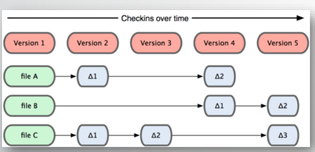
Dettagli
- Dopo aver effettuato le modifiche, effettuo pull request o push diretto.
- Lavora nei filesystem, non ha bisogno di una connessione al server per lavorare.
- GIT salva solo i DELTA dei file, cioè le modifiche, quindi è molto più leggero e veloce.
Stati GIT
Modifica i file nella directory, aggiungo uno snapshot dell'area attuale(area di Staging) ed effettuo un COMMIT nella git Repository.
Working directory: Directory Lavorativa, directory dove ho la mia repository.
Staging Area: Area dove ho effettuato le modifiche, ma non sono ancora confermate
Git Directory: Directory contenente i file di git. Con un commit, posso aggiornare questo descrittore e aggiornare anche la working directory .
Creazione e Clonazione Repository
Creazione
git init
Comando che, nella cartella attuale, mi permette di inizializzare un file git per gestire le versioni nella directory attuale.
Clonazione
git clone https://link.xyz/miofile.git
Mi permette di clonare la repository completa, con il file git completo con tutte le modifiche delle versioni salvate.
Branches
Git funziona con un sistema a "rami" dove possiamo avere dei path di development indipendenti.
Ogni branch coesiste nella stessa directory, ma hanno storia delle versioni NON in comune.
Questo mi permette di poter modificare un branch senza modificarne gli altri, potendo effettuare modifiche esclusivamente ad una versione/funzione del sistema.
Master: branch di default di git.
L'utilità è la possibilità di fare modifiche senza toccare la versione principale.
Aggiunta Branch Nuovo
git branch NOMEDELBRANCHNUOVO
esempio:
git branch testing
Clono il branch master e lo chiamo testing
Cambio del Branch
git checkout NOMEDELBRANCH
esempio:
git checkout testing
Imposto il mio puntatore HEAD su quale BRANCH spostarmi.
HEAD: Puntatore che punta al branch attuale dove mi trovo.
Aggiunta file
git add FILEDAAGGIUNGERE
esempio:
git add file1.txt file2.jpg ../file3.mov
git add miofile.txt
git add *
Mi permette di aggiungere al commit(versione) attuale i file che voglio. Questi file saranno i file nuovi, i file che ho aggiunto o modificato.
Conferma versione
git commit -m "MESSAGGIO"
esempio:
git commit -m "fix something, doing anything"
Ho creato una versione, lasciando un messaggio per chi leggerà.
Modifica dell'ultimo messaggio
git commit --amend -m "messaggio modificato"
Utile se mi sono accorto di aver scritto qualche eresia nel messaggio dell'ultimo commit.
Modifica di più commit
git rebase
Comando avanzato, leggi la guida per saperne di più.
Unione di due versioni
git merge BRANCH
Unisco la versione in BRANCH sul branch attuale.
Se voglio copiarle in master
git checkout master
git merge NOMEBRANCH
Ottenere nuove modifiche dal server
git pull
Vado ad ottenere dal server le modifiche nel branch attuale se ce ne sono .
Controllare se ci sono nuove modifiche dal server
git fetch
git status
FETCH ci permette di ottenere solo la lista dei delta nel branch attuale (e non ottiene le modifiche salvandole in locale come
git pull).
STATUS ci permette di controllare quanto è avanti o indietro la nostra versione con la versione sul server.
Inviare le modifiche al server
git push
Invia al server le modifiche e i file modificati che differiscono (delta) dalla versione su server.
ATTENZIONE, questo comando funziona solo se siamo avanti di modifiche dalla versione sul server. Se la versione sul server è aggiornata (più nuova della nostra), cioè ha modifiche che noi non abbiamo, DEVI prima ottenere le modifiche e fixare eventuali conflitti.

GitLab
Tutorial fornito dal professore.
Per utilizzare gitlab dobbiamo utilizzare una chiave SSH.
Generare una chiave SSH
Dopo aver scaricato GIT
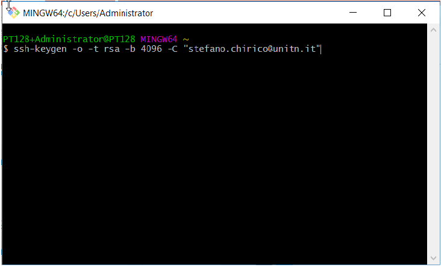
ssh-keygen -o -t rsa -b 4096 -C "email@dominio.xyz"
Dove
-tè il tipo di cifratura utilizzata (RSA);-bè il numero di bits con la quale verrà generata;-Cè il commento che daremo per ricordarci a cosa è collegata.
Se non abbiamo un path con delle key ssh, ci chiederà dove metterle. Lasciamo il percorso base.

Ci chiede una password per proteggere la key. Per NON inserirla basterà dare un invio.
Fornire key pubblica a GitLab
Dentro alla cartella di prima avremmo due file:
id_rsaid_rsa.pub
noi dobbiamo aprire la key pubblica e fornirla a gitlab.
ATTENZIONE a fornire a gitlab la chiave PUBBLICA e non quella privata.
La chiave pubblica è quella con estensione
.pub
Un modo per copiare la key è con il seguente comando effettuato nella cartella dove abbiamo la key id_rsa.pub:
cat id_rsa.pub | clip
dove
catlegge in uno stream i dati dal fileid_rsa.pub- concatenando il pipeline con
clipli copio sulla clipboard.
Copio su gitlab la key pubblica in User Settings SSH Keys.
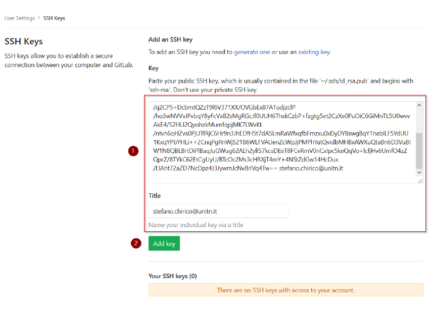
Per altre informazioni riporto alle Slide del professore.
Fornire le proprie informazioni a GitLab
Prima di clonare, soprattutto se ho creato una repository privata (vedi slide del professore), essendo tale non è accessibile senza una effettiva autenticazione.
Al push, pull o clone ci verrà chiesta un autenticazione se la repository è privata.
Nonostante questo, per effettuare modifiche sul file git dobbiamo dire chi siamo. (altrimenti non sa chi ha modificato il file git).
Autenticarsi globalmente
Posso impostare un username globale, cioè per ogni repository:
git config --global user.email "mia@email.xyz"
git config --global user.name "Nome Cognome"
Autenticarsi solo sulla Git Directory corrente
Effettuabile solo in una cartella con un git inizializzato:
git config user.email "mia@email.xyz"
git config user.name "Nome Cognome"
25/02/2019
Introduzione ai Sistemi Distribuiti
Sistema che funziona a livello globale è sicuramente distribuita.
google, facebook etc etc
Essendo arrivati al limite fisico dei transistor dei processori, la potenza di calcolo è data da una moltitudine di processori. Oltretutto posso avere più calcolatori che lavorano sullo stesso processo.
Sistemi distribuiti: Definizione
Da un punto di vista operativo Un sistema distribuito è un sistema in cui i componenti hardware e/o software, situati in computer collegati in rete, comunicano e coordinano le loro azioni solo passando messaggi.
Da un punto di vista dell’utilizzatore: Un sistema distribuito è una raccolta di computer indipendenti che appare ai suoi utenti come un unico sistema coerente.
Da notare come l'utilizzatore ha astrazione e non vede i diversi server che ci sono dietro.
Il sistema distribuito è organizzato con un middleware, è esteso a più computer e offre a ciascuna app la stessa interfaccia(API)
Perchè faccio ciò? lo faccio per distribuire il carico.
Più calcolatori gestiscono più richieste! Evita un attacco DDoS(Denial of Service distribuito), mi permette di gestire meglio il traffico che arriva al pc.
Alla base uso il round-robin in DNS: Associa un nome ad un indirizzo IP, quando cerco con nslookup ottengo più indirizzi, poichè un singolo nome dns ha più server collegati.
Il middleware gestisce l'instradazione dei pacchetti sui vari server. Ovviamente dobbiamo avere una larghezza di banda adeguata e interfacce di rete che la supportano.
Approfondimento:
VPS: Virtual Private Server, virtualizzazione dentro una singola macchina di un OS a disposizione dall'utente. Molto più lento di un barebone perchè ho multitasking su servizi.
Tre modi:
- DNS: Uso il DNS per bilanciare il traffico;
- Hardware;
- Software: Uso di un middleware per gestire il traffico e indirizzarlo alle macchine.
Può essere usato in diverse modalità, ovviamente uso le più veloci per real time APP, mentre posso permettermi un rallentamento in motori di ricerca e simili.
Una rete cellulare è un sistema distribuito: le antenne sono sistemi distribuiti che forniscono il segnale a tutti.
Obbiettivi sistemi distribuiti
- Condivisione di risorse;
- Trasparenza di distribuzione;
- Apertura verso espansione dei servizi;
- Scalabilità;
- Fault Tolerance;
- Etereogeneità di HW e SW .
Condivisione delle risorse
L'idea è avere accesso remoto ad una risorsa, per ottimizzare avendo un controllo efficiente (stampanti, archivi...).
Ho diversi motivi per condividere, principalmente risparmio in costi (compro una stampante per piano, non faccio una stampante per ogni dipendente). Permette in oltre di gestire la concorrenza.
Si implementano modi a tessera, dove l'utente dopo aver inviato la stampa, quest'ultima inizia solo se l'utente passa una tessera sulla stampante stessa. Utile per loggare chi stampa cosa e per privacy.
Questo modello descrive come:
- Le risorse sono rese disponibili;
- Le risorse possono essere utilizzate;
- Fornitore di servizi e utente interagiscono tra loro.
Modelli di condivisione delle risorse:
Modello Client-Server:
- I processi server fanno da gestori delle risorse e offrono servizi;
- I client fanno richiesta al server che fornisce i servizi;
- Uso di HTTP.
Modello basato su oggetti:
- Uso di un sistema ad interfacce tra oggetti o simil oggetti
Trasparenza della distribuzione
Definizione: Un sistema distribuito che è in grado di presentarsi ai suoi utenti ed applicazioni come se fosse solo un singolo sistema si definisce trasparente.
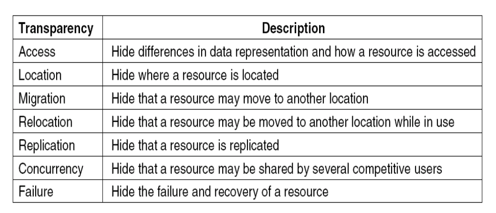
Ho diversi gradi di trasparenza, devo avere un bilanciamento tra prestazioni e alto grado di trasparenza.
I problemi che possono sorgere sono principalmente se succede qualcosa al datacenter e/o ho da effettuare un aggiornamento. Se ho un sistema bancario, non posso spegnere ed accendere il server! Allo stesso momento, devo replicare i dati per evitarne la perdita. Devo offrire concorrenza e migrazione, in uso o meno. L'accesso, indipendentemente da dove viene fatto, deve essere possibile. Devo avere una gestione delle rotture (comprare HW di qualità). Tutto ciò deve essere fatto senza che l'utente lo sappia.
Apertura verso espansione dei servizi
Definizione:Un sistema distribuito aperto è un sistema che offre servizi in base a regole standard che descrivono la sintassi e la semantica di tali servizi.
I servizi sono specificati tramite interfacce:
- Interface Definition Language (IDL): acquisizione della sintassi (la semantica e’ la parte difficile da specificare) ;
- Estensibilità: un DS aperto può essere esteso e migliorato in modo incrementale, es aggiungendo o sostituendo componenti.
Scalabilità
Definizione: Un sistema è scalabile se rimane efficace quando vi è un aumento significativo della quantità di risorse (dati) e del numero di utenti.
La scalabilità indica la capacità di un sistema di gestire un carico futuro crescente.
Può essere:
- Scalabile in dimensione;
- Scalabile geograficamente;
- Scalabile in modo amministrativo.
Problematiche:
Scalabilità in dimensione:
Soluzioni centralizzate creano problemi di banda e stabilità se cade il server principale.

Scalabilità Geografica
- Comunicazione in LAN Sincrona
- Comunicazione inaffidabile in WAN
Scalabilità Amministrativa:
- Distribuzione su più domini, ho dei conflitti per l'utilizzo delle risorse.
Metodologie:
Distribuzione
- Divido risorsa in più parti e la distribuisco su più server attraverso il sistema.
Replica:
Replica di un servizio su più server dislocati;
Gestione della cache , locale e remota(proxy server);
- DNS Caching: Cerco il DNS, lo cacha in locale dopo averlo ottenuto per le prossime richieste entro tot ore.
Aumenta disponibilità e bilanciamento di carico.
Nascondere lentezze di comunicazione
Fare attenzione alla Larghezza e ampiezza di banda! La Latenza conta! Più aumenta la latenza e meno banda possiamo utilizzare. Calcolo Throughput online.
Fault Tolerance
Tolleranza dei problemi agli errori/rotture.
Rotture Hardware
Database
Transaction
- Completa
- Uso di rollback se incompleta
Ridondanza dell'informazione
- Problema di avere informazioni memorizzate in più zone, ma uguali.
Spesso i cambi nel datacenter avvengono ogni tre anni, con controlli effettuati spesso.
Implicazioni dei sistemi distribuiti
NON esiste global clock
- Non posso sincronizzare tutte le macchine!
- Non esiste un sistema di sincronizzazione globale!
Comunicazione
- Inaffidabile;
- Non protetta;
- Costosa.
Cluster di calcolo
Sistema di calcolo dove ho più server che lavorano ad uno stesso calcolo utilizzando lo stesso stema operativo.
Molto usati per
- Problemi di ingegneria;
- Previsione del meteo;
- Struttura dell'universo;
- ... e tutti i probemi computazionalmente complessi!
Distributed Computing as an Utility
- PaaS: Platform as a Service;
- SaaS: Software as a Service;
- IaaS: Infrastructure as a Service.
Introduzione alle socket
Due possibilità di comunicazione:
TCP
- Comunicazione affidabile;
- Più lento per gli ACK;
- Recupero dagli errori.
UDP
- Non ho controllo errori;
- Più efficiente;
- Non si pone il problema di perdita dati.

Sockets: Definizione
Definizione: Una socket è un meccanismo che consente la comunicazione tra i processi, siano essi programmi in esecuzione sulla stessa macchina o diversi computer connessi in rete.
Più in particolare, le socket Internet forniscono un'interfaccia di programmazione allo stack del protocollo di rete gestito dal sistema operativo. Usando le API, un programma può inizializzare rapidamente un socket e inviare messaggi senza doversi preoccupare di problemi come il framing dei pacchetti o il controllo della trasmissione. Esistono diversi tipi di socket disponibili, ma siamo interessati solo ai socket Internet:
- Datagram Sockets (UDP)
- Stream Sockets (TCP)
Le differenze sono molteplici, ma principalmente per tolleranza perdite 0 si utilizza TCP.
Per applicazioni VoIP invece utilizzo di UDP, tollero la perdita di trasmissione(ci** c*me va si capisce comunque, mentre un trasferimento di un file deve essere impeccabile) e mi sarebbe costosa una ritrasmissione continua.
Mentre per i Stream devo aprire e chiudere la connessione, per un Datagram non ce n'è bisogno.
Un server sarà in listen, mentre un client invierà (TCP).
Composizione socket
Una socket è rivolta in hostDNSIndirizzo IP + Porta.
Utilizzo protocollo IP, con Porta, dove quest'ultima sarà e se ho applicazioni personalizzate, poichè le porte sono porte conosciute e riservate.
Debbono ovviamente essere porte non già utilizzate nello stesso IP.
Esempio di porte standard

In JAVA:
import.java.net.*;
Per socket TCP:
Socketè il socket dalla parte del client;connectinizia una sessione TCP.
ServerSocketè il socket dalla parte del server.binddove collego il mio IP ad una Porta specifica;listenaspetta per ricevere la comunicazione.
Mentre per i socket UDP:
DatagramSocketsia per client che per server.
Nota che i byte-stream TCP combina gli stream consecutivi. La formattazione deve essere fatta dall'app.
26/02/2019 - Lab
Uso di OpenJDK, cambia dall'originale solo la licenza.
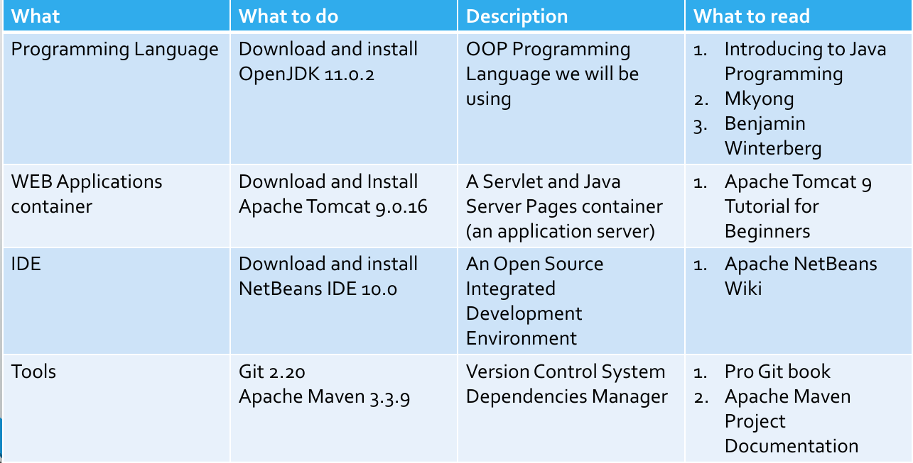
Dopo aver installato Java, come nelle slide, installare mettere la JAVAHOME sul path di sistema.
Dopo aver installato Java, installo netbeans.
Disattivare proxy https in gitlab
git config --global --unset https.proxy
Versioni
se incremento qualcosa che è una nuova funzione, incremento .
Per altre modifiche minori incremento che non introduca nuova versione
Per modifiche bugfix e simili incremento .
Package
Dominio della azienda al contrario
it.unitn.disi.wp.labXX.nomeprogramma
Creazione del progetto con maven
Crea progetto Java Maven
04/03/2019
Visualizzazione pagine web
HTML: Linguaggio descrizione pagina (HyperTextMarkupLanguage)
- Sistema di markup, indica la struttura di esso.
- Statico, veloce, ma poco versatile.
CSS: Stile di visualizzazione pagina
Browser:Renderizzazione a schermo di pagina HTML in ascii
Da tenere conto i problemi di disabilità visiva e funzionale:
- Evitiamo combinazioni con alto contrasto;
- Daltonismo;
- "vecchiaia".
Utilizzo di strumenti come JS con ingrandimento al click.
Un sito lento è poco usato.
HTML5: Tentativo di versatilità del documento html, con sistema di caching(?) supportato.
Storicamente
I browser non rispettavano la definizione dei protocolli, perchè le direttive venivano date successivamente.
Come funziona?
Utilizzo di tag: <body></body>
dove:
<body>è il tag di apertura;</body>è il tag di chiusura.
Una pagina HTML deve essere scritta bene, oppure il browser interpreta come vuole.
Elemento HMTL
<p>è un tag<p>Contenuto</p>- l'insieme dei due è un elemento.
Attributi HTML
<a href="cose">Cose</a>
href è un attributo.
Commenti HTML
<!-- COMMENTO -->
Un commento non viene tradotto ne visualizzato dal browser.
Principalmente
Non è case sensitive;
Non tutti i tag vengono chiusi una volta aperti;
<br>
I TAG sconosciuti vengono ignorati;
CLRFvengono sostituiti con uno spazio;
Diviso in
HEAD: Informazioni per definire la pagina. Informazioni non renderizzate.
BODY: Contenuto della pagina.
Intestazioni
<h1>...</h1>
<h6>...</h6>
più alto è il numero, più è piccolo il titolo.
Tipi di carattere
xxxxxxxxxx41carattere normale2<b>carattere Bold</b>3<i>Carattere Italic</i>4<TT>Carattere Teletype</TT>
e varie combinazioni di essi.
Caratteri speciali
< si scrive <
> si scrive >
& si scrive &
Devo rispettare le codifiche! è leggibile ovunque così.
Liste
Ordinate
xxxxxxxxxx41<ol>2<li>uno</li>3<li>due</li>4</ol>Non ordinate
xxxxxxxxxx41<ul>2<li>uno</li>3<li>due</li>4</ul>Definite
xxxxxxxxxx51<dl>2<dt> SGML <dd> Standard Generalized Markup Language3<dt> HTML<dd> Hypertext Markup Language4<dt> XML <dd> Extensible Markup Language5</dl>Sto fornendo come "pallini", SGML,HTML e XML.
Elementi di formattazione
<P><BR><BLOCKQUOTE><PRE><HR>
<P>: Paragrafo, tiene la formattazione.<BR>Break, va a capo.<BLOCKQUOTE>: Blocco quotato, simil citazione, indentato.<PRE>: Contiene codice, formattazione forzata.<HR>: Linea orizzontale.
Meta Dati
<meta ...>
Inserite nello HEAD, ci permettono di indicizzare il tutto.
xxxxxxxxxx31<meta Name=“author” Content=“Alessandro Borghese”>2<meta Name=“ keywords” Content=“Cucina d’Osteria”>3<base HREF=“URL”>Importante non abusare di questa funzione o il motore di ricerca indicizzerà male(o non lo farà proprio) il nostro sito.
Link interni(ed esterni)
Interni:
xxxxxxxxxx41<a href=“#altro”>cose</a>2:3:4<a name=“altro”>Ecco le cose</a>il primo è cliccabile, il secondo è un riferimento.
Mentre i link esterni sono come quelli visti prima.
xxxxxxxxxx11<a href=“URL”>Link</a>Form
Fornisco all'utente la possibilità di inviare informazioni al server.
xxxxxxxxxx171<FORM method="POST" action="/cgi-bin/elabora">2Scrivi il tuo nome3<Input type="text" size“=25" maxlength="15“ name=“a”>4<Input type="submit" value="spedisci">5<Input type="reset" value="annulla">6<Input type="radio" name="colore" value="rosso">Rosso7<Input type="radio" name="colore" value="argento" checked>Argento8Fai la tua scelta:9<Input type="checkbox" name="tipo" value="auto" checked>Auto10<Input type="checkbox" name="tipo" value="bus">Bus11<Input type="checkbox" name="tipo" value="camion">Camion12<Select name="colore">13<option>Rosso14<option selected>Argento15</select>1617</FORM>Formè la definizione del form stesso.methodspiega come spedire i dati, cioè con uso di operazioni CRUD.actionspiega dove spedirli;enctypespiega il MIME usato per spedire i dati;
Inputè un campo di inputtypespiega che tipo di input è;textè testo;submitè il tasto che invia i dati;resetè il tasto che elimina tutti i dati inseriti nel form.Radioè una lista definita daname, dove avrà un solo output restituito(posso selezionale solo uno dei due).Valuein questo caso è il valore che fornisco quando seleziono uno dei due.checkeddefinisce quale è selezionato di base.
checkboxè una lista definita danamedove avrà uno o più output restituiti.(Posso selezionare più di uno).Valuedefinisce quale di questi sono stati selezionati.checkeddefinisce quale è selezionato di base.
namedefinisce l'oggetto/gli oggetti che stiamo settando.
valueè il testo mostrato all'utente sulbuttono il valore di ritorno.
Selectcrea un menù a tendina, con il relativonamedi definizione.optiondefinisce una opzione del menù a tendina, con il relativovalue.selectedè l'opzione settata di base.
L'output sarà
nome=valore
Script e Style
Posso avere esecuzione di codice JS sul browser, con <script>...</script>
mentre posso avere lo stile della pagina con <style>...</style> senza necessariamente utilizzare un file CSS.(Va incluso nell'<HEAD></HEAD>)
xxxxxxxxxx81<HTML>2 <HEAD>3 <STYLE TYPE="text/css">4 h1 {color:red}5 p {font-size:18}6 </STYLE>7 </HEAD>8</HTML>
Lo stile va per livelli, cioè viene eseguito con priorità quello dei tag:
<p style="...">
ha meno priorità quello di pagina:
<style>...</style>
e ha ancora meno priorità quello esterno(in un file CSS) collegabile inserendo nell'<HEAD></HEAD> il seguente :
<link rel="stylesheet" type="text/css" href="PATH/AL/CSS.css" >
Script di esempio da inserire
xxxxxxxxxx71<script type=“text/javascript” language=“javascript”>2<!--3function ciao() {4alert(“hello world”)5}6//-->7</script>È buona norma inserire il tag script in fondo pagina, ciò permette di caricare tutta la pagina prima che si carichino li script, che di norma sono più pesanti dei tag HTML statici.
Standard da utilizzare
xxxxxxxxxx11Spiega al browser quale standard utilizzare. Non è un tag.
Validatore
Controlla che il codice sia corretto. Qui.
HTML DOM
Dom è un Document Object Model.
Document Object Model: Rappresento un documento HTML come oggetti, annidati uno dentro l'altro, come i TAG HTML.
Struttura di esempio:

Ogni oggetto(quindi tag) in DOM ha:
Proprietà: Caratteristica, ad esempio, nome.
n.innerHTML- restituisce tutto ciò che è contenuto in n;n.nodeName- restituisce il nome di n;n.nodeValue- restituisce il valore id n;n.parentNode- restituisce il nodo padre di n;n.childNodes- restituisce l’elenco di nodi figli diretti di n;n.attributes- restituisce l’elenco degli attributi di n.
Metodi: Meccanismo per modificare/interagire una proprietà del nodo stesso.
n.getElementById(id)- restituisce l’elemento con uno specifico id;n.getElementsByTagName(name)- restituisce l’elenco di tutti gli elementi del tipo indicato tra parentesi e contenuti nel nodo n;n.appendChild(node)- inserisce il figlio indicato tra partentesi come figlio di n;n.removeChild(node)- elimina il nodo figlio di n indicato tra parentesi.
Utilizzo
xxxxxxxxxx11document.getElementById("primo").innerHTML=”<h3>Cambio contenuto<\/h3>”;Cambio contenuto dell'elemento con ID "primo" e lo metto con ciò scritto dentro a innerHTML.
CSS
CSS sta per Cascading Style Sheet.
Descrivo lo stile della pagina da utilizzare.
Sintassi
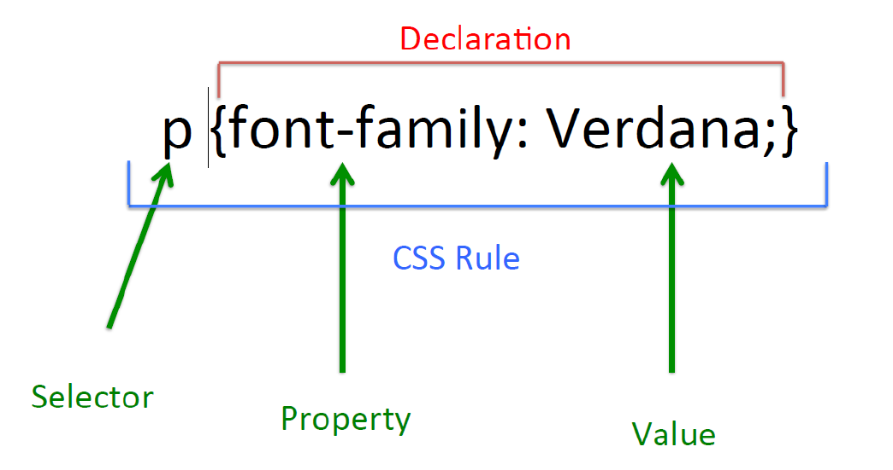
Cascading
Cascading indica il modo in cui vengono risolti I conflitti in caso di conflitti:
- Inline style (highest priority);
- Internal style sheet (second priority);
- External style sheet (third priority);
- Web browser default (only if not defined elsewhere).
Se più stili in conflitto sono definiti nel foglio samestyle, verrà applicato solo quello finale.
xxxxxxxxxx51p {2color: red;3font-style: italic;4text-align: center;5}Gli spazi sono ignorati, come gli acapo.
Tipi di elemento
Selector:
xxxxxxxxxx31p{2color:yellow;3}Modifico tutti i tag che hanno quel tag specifico. (in questo caso
<p>)ID:
xxxxxxxxxx31#primo{2color:yellow;3}Modifico tutti i tag che hanno quell'ID. (in questo caso
<taggenerico id="primo">)Class:
xxxxxxxxxx31.nomeclasse{2color:yellow;3}Modifico tutti i tag che hanno quella classe.
(in questo caso
<taggenerico class="nomeclasse">)È possibile specificare una classe che funziona solo per il determinato tag:
xxxxxxxxxx31h1.nomeclasse{2color:yellow;3}funzionerà solo in
<h1 class="nomeclasse"></h1>Mentre
xxxxxxxxxx31.nomeclasse h1 {2color:yellow;3}funzionerà solo nei tag
h1dentro ad un tag con classenomeclassexxxxxxxxxx51<div class="nomeclasse">2<h1>3Ciao!4</h1>5</div>
Per gestire un elemento all'interno di un elemento
xxxxxxxxxx31div h1{2 color: yellow;3}Come nell'esempio delle classi, il funzionamento è lo stesso.
h1 dentro div.
xxxxxxxxxx51<div>2 <h1>3 Ciao!4 </h1>5</div>
Gestire più di un elemento
xxxxxxxxxx31h2,h1 { 2 color:yellow;3}Pseudo Selettori
hover: se ci passa sopra con il mousexxxxxxxxxx31h1:hover {2color:yellow;3}link: se è un linkxxxxxxxxxx31a:link {2color:yellow;3}visited: se è un link ed è già stato visitatoxxxxxxxxxx31a:visited {2color:yellow;3}
Colori
sono definiti in diversi modi:
- per Nome:
color:yellow; - per Valore Esadecimale:
color:#FF0000; - per valore RGB(RedGreenBlue):
color: rgb(255,0,0); - per valore HSL:
color: hsl(0,100%,100%);
Ricordiamo che per nome sono molto limitati:
aqua, black, blue, fuchsia,gray,grey, green, lime,maroon, navy, olive, purple,red, silver, teal, white, yellow.
color per il colore dell'oggetto/font, mentre background-color per il colore di background.
Larghezze e percentuali
pxunità per il pixel;emgrandezza del font attuale (2emè due volte la grandezza del font);ptunità per i punti, usata spesso nei media;%sono percentuali(width: 80%)- Altre unità includono
cm,mm,in(inches).
Composizione di un Box

Testo: Font
I font non sono tutti considerati sicuri. Quelli considerati tale, sono di base a tutti i browser.
Si specificano con font-family.
xxxxxxxxxx31p{2 font-family: Arial, Helvetica, Serif;3}Cercherà Arial, se non lo trova, mette Helvetica, se non lo trova mette Serif. Se non lo trova mette il font di base.
Altri attributi:
font-size:settta l’altezza del font (remember units such as px, em, pt);font-weight: indica la tipologia di variante del font (grassetto, etc...)(bold, light,normal,...);font-style: sIndica se il testo e’ scritto in corsivo (italic, normal);text-decoration: indica se deve essere sottolineato o barrato (underline, overline, line-through, none);text-transform: cambia il capitalizzazione (capitalize, uppercase,lowercase, none).
Testo: Spacing
letter-spacing: imposta la spaziatura tra le lettere. Il valore può essere length o normal;
word-spacing: imposta la spaziatura tra le parole. Il valore può essere length o normal;
line-height: imposta l'altezza delle linee in un elemento, ad esempio un paragrafo, senza regola la dimensione del carattere. Può essere un numero (che specifica un multiplo del dimensione del carattere, quindi "2" sarà due volte la dimensione del carattere, ad esempio), una lunghezza, una percentuale o normal;
text-indent: indenterà la prima riga di un paragrafo, a una data lunghezza o percentuale;
text-align: allinea il testo all'interno di un elemento a sinistra, a destra, al centro o giustificato.
Layout delle pagine
Mobile First Pages
Pagine che sono basate su framework per funzionare correttamente.
- Comode, veloci e adattive;
- Difficili da programmare/gestire.
Framework css molto utilizzato: Bootstrap.
05/03/2019-Laboratorio
Seguito le slide pari pari.
Nuove feature HTML5
- 2D drawing/animating usando l'elemento
<canvas>. - Media playback con
<video>e<media>. - Elementi specifici per il contesto:
<article>,<footer>,<header>,<nav>,<section>. - Nuovi form controls come:
calendar, date, time, email, search, url. - Nuovi attrbuti form come:
list, pattern. - Supporto per drag-and-drop.
- Supporto per Geo-localization.
- Supporto per local e session storage (web storage).
- Supporto per background computation (web workers).
Drag and drop
Ogni elemento può essere draggable
xxxxxxxxxx241<html>3 <head>4 <title>This is a title</title>5 <script>6 function allowDrop(ev) {7 ev.preventDefault();8 }9 function drag(ev) {10 ev.dataTransfer.setData(“Text”, ev.target.id);11 }12 function drop(ev) {13 ev.preventDefault();14 var data = ev.dataTransfer.getData(“Text”);15 ev.target.appendChild(document.getElementById(data));16 }17 </script>18 </head>19 <body>20 <div id=“div1” ondrop=“drop(event)” ondragover=“allowDrop(event)”></div>21 <img id=“drag1” src=“img_logo.gif” draggable=“true” ondragstart=“drag(event)”22 width=“336” height=“269”>23 </body>24</html>
ev.preventDefault()cancella l'evento se è cancellabile.ev.dataTransfer.setData(“Text”, ev.target.id);ci permette di associare un identificativo altarget.iddell'evento.var data = ev.dataTransfer.getData(“Text”);vado a prendermi il dato che avevo salvato con identificativo"Text"e lo metto su data.ev.target.appendChild(document.getElementById(data));appendo il target con iddata.
Quello che accade è che posso trascinare nel div con ondragover=“allowDrop(event)”(senza ciò il div non sarebbe un contenitore), poi, attraverso ondrop=“drop(event)” forniamo al JS l'evento che gli permetterà di capire che oggetto attaccare con appendChild. L'immagine sarà draggable=“true” e attraverso ondragstart=“drag(event)” allo start del drag fornisco l'id dell'oggetto che sto trascinando al drop(event), permettendo l'append.
Geolocation
xxxxxxxxxx121var x = document.getElementById("demo");2function getLocation() {3 if (navigator.geolocation) {4 navigator.geolocation.getCurrentPosition(showPosition);5 } else {6 x.innerHTML = "Geo-location is not supported by this browser.";7 }8}9function showPosition(position) {10 x.innerHTML = "Latitude: " + position.coords.latitude + "<br>Longitude: " + position.coords.longitude;11}12Se navigator.geolocation esiste, chiamo il metodo navigator.geolocation.getCurrentPosition(); passandogli come parametro la funzione showPosition(callback function JS). Se non esiste, fornisco un messaggio d'errore, modificando l'HTML con innerHTML di un tag scelto. showPosition utilizza la posizione che ottiene da getCurrentPosition in callback e modifica l'html con innerHTML con le coordinate latitudine position.coords.latitude e longitudine position.coords.longitude;.
Web Worker
Un web worker è un JS in background che non modifica in modo significativo le performance della pagina web.
Quando si eseguono script in una pagina HTML, la pagina non risponde finché lo script non viene completato. Un web worker è un JavaScript che viene eseguito in background, indipendentemente dagli altri script, senza influenzare le prestazioni della pagina. Puoi continuare a fare ciò che vuoi: fare clic, selezionare le cose, ecc., Mentre il web worker viene eseguito in background.
I worker sono esterni, quindi non hanno accesso alla finestra, ne documento o parent.
semplice esempio preso da qui.
xxxxxxxxxx291<html>3<body>4<p>Count numbers: <output id="result"></output></p>5<button onclick="startWorker()">Start Worker</button> 6<button onclick="stopWorker()">Stop Worker</button>7<p><strong>Note:</strong> Internet Explorer 9 and earlier versions do not support Web Workers.</p>8<script>9var w;10function startWorker() {11 if(typeof(Worker) !== "undefined") {12 if(typeof(w) == "undefined") {13 w = new Worker("demo_workers.js");14 }15 w.onmessage = function(event) {16 document.getElementById("result").innerHTML = event.data;17 };18 } else {19 document.getElementById("result").innerHTML = "Sorry, your browser does not support Web Workers...";20 }21}22function stopWorker() { 23 w.terminate();24 w = undefined;25}26</script>27</body>28</html>29Bootstrap
Sistema a grid
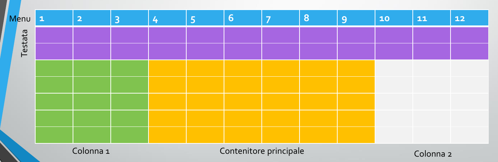
Funziona a colonne, posso scrivere quante colonne occuperà un determinato oggetto.
xxxxxxxxxx51 <div class="row">2 <div class="col-sm-3" style="background-color:lavender;">.col-sm-3</div>3 <div class="col-sm-6" style="background-color:lavenderblush;">.col-sm-6</div>4 <div class="col-sm-3" style="background-color:lavender;">.col-sm-3</div>5 </div>Questi div occupano rispettivamente 3 colonne, 6 colonne e 3 colonne.
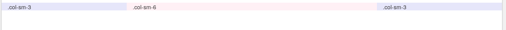
Esempio di bootstrap
xxxxxxxxxx311<html lang=“en”>34<head>5 <meta charset=“utf-8”>6 <meta http-equiv=“X-UA-Compatible” content=“IE=edge”>7 <meta name=“viewport” content=“width-device-width, initial-scale=1.0”>8 <!--9 The above 3 meta tags *must* come first in the head; any other head content must come *after* these tags -->10 <title>Bootstrap 101 Template</title>11 <!– Including of CSS Bootstrap library -->12 <link href=“css/bootstrap.min.css” rel=“stylesheet” media=“screen”>13</head>1415<!-- HTML5 shim and Respond.js for IE8 support of HTML5 elements and media queries -->16<!-- WARNING: Respond.js doesn't work if you view the page via file:// -->17<!--[if lt IE 9]>18<script src="https://oss.maxcdn.com/html5shiv/3.7.3/html5shiv.min.js"></script>19<script src="https://oss.maxcdn.com/respond/1.4.2/respond.min.js"></script>20<![endif]-->2122<body>2324 <p>Hello world!</p>25 <!– Inclusion of JavaScript JQuery library is mandatory -->26 <script src=“https://ajax.googleapis.com/ajax/libs/jquery/3.3.1/jquery.min.js”></script>27 <!– Including of JavaScript Bootstrap library -->28 <script src=“js/bootstrap.min.js”></script>29</body>3031</html>
Firefox e Chrome mi mostrano la struttura del DOM modificata al momento dai vari script.
.ready() è il codice che si esegue a fine caricamento.
11/03/2019
Web Architectures
Tim Berners-Lee 1989 www
Ha sviluppato HTML, URL, HTTP;
Recupero informazioni da diverse fonti, anche le NewsGroup.
Architetture multi-tier
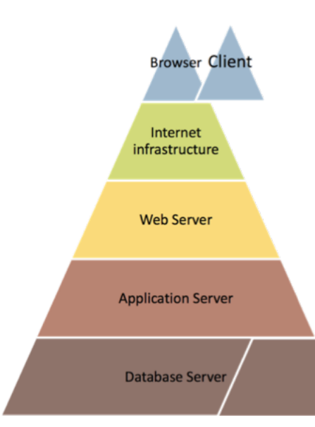
Architetture a più tier per ottenere informazioni:
Ho una rete;
Ogni livello ha diverse funzionalità;
Il frontman delle richieste è il WebServer. Il WebServer decide dove instradare il tutto.
- Sotto di esso ci sono gli AppServer/DBserver
La più basilare è composta da client e server.
Versione di base
Ha due livelli, come detto prima.
Il browser fa richiesta, ottiene la pagina dal server e mostra a schermo.
Web Browser
Programma con il quale porto informazioni, graficamente e non, all'utente.
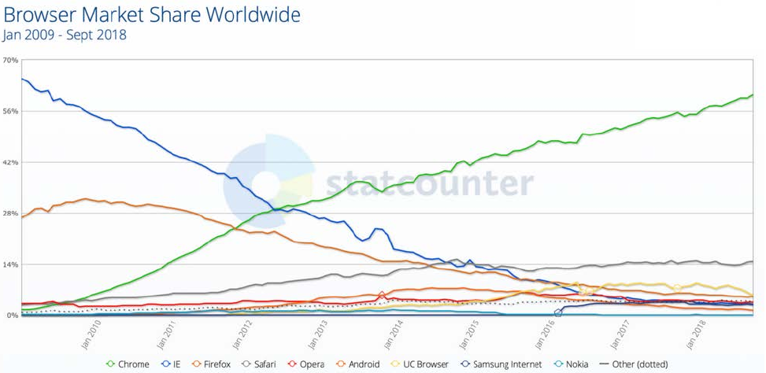
Web Server
Usa il protocollo HTTP, fornisce al client ciò che gli viene richiesto se disponibile e se permesso.
I più usati sono Apache e Nginx.
Entrambi sono multithread. Se crasha una istanza, il webserver rimane online!
Lighthttpd si utilizza nei server Embedded.
HTML
Non è un linguaggio di programmazione!
URI e URL
Uniform Resource Identifier (URI) e Uniform Resource Locator (URL) non sono sinonimi.
xxxxxxxxxx11Un URI può essere classificato come un localizzatore, un nome o entrambi. Il termine “Uniform Resource Locator” (URL) si riferisce al sottoinsieme di URI che, oltre a identificare una risorsa, forniscono un mezzo per localizzare la risorsa descrivendo il suo meccanismo di accesso primario (ad esempio, la sua “posizione” di rete). Il termine “Uniform Resource Name” (URN) è stato usato storicamente per riferirsi a entrambi gli URI sotto lo schema “urna” [RFC2141], che sono tenuti a rimanere globalmente unici e persistenti anche quando la risorsa cessa di esistere o diventa non disponibile, e a qualsiasi altro URI con le proprietà di un nome.
Tutti gli URL sono URI(Falso se cambio interpretazione), ma non tutti gli URI sono URL perchè ho anche gli URN.
Un Uniform Resource Locator o URL
è un insieme di caratteri che identifica in modo univoco una risorsa nel Web.
È identificato da
protocollo://[username[:password]@]host[:porta]</percorso>[?querystring][#fragment]dove la parte obbligatoria è
protocolloedhost.Un URL senza protocollo non è un URL ma un semplice URI.
Esempio URL
http://www.google.com/cose/index.html
ho un protocollo, un web domain, una o più folder ed eventualmente un file HTML.
ATTENZIONE
ẁww.google.com/cose/index.html non è un URL, ma un semplice URI.
Questo perchè è sprovvisto di protocollo, quindi potrebbe essere ftp://... e non solo .
Un Uniform Resource Name o URN
è un URI che identifica una risorsa all'interno di un namespace, ma, a differenza del URL, non permette l'identificazione della locazione della risorsa stessa (what invece di where).
È identificato da
<URN> ::= "urn:" <NID> ":" <NSS>cioè, più semplicemente
urn:<NID>:<NSS>Dove
NIDè Namespace Identifier, identifica sintatticamente NSS.NSSè la Namespace Specific String, cioè la stringa che identifica la risorsa in modo univoco, nel tempo, anche in lunghi periodi e anche se la risorsa viene eliminata, ma non dove è situata.
Esempio URN
urn:isbn:0451450523Un esempio di URN è il codice ISBN: questi identifica univocamente un libro, ma non ci dà alcuna informazione sulla locazione dello stesso.
URL o URN?
Vari esempi forniti dal professore.
xxxxxxxxxx131URL http://www.pierobon.org/iis/review1.htm2URN urn:isbn:978-88-96297-26-13URI http://www.pierobon.org/iis/review1.htm.html#one4URL: ftp://ftp.is.co.za/rfc/rfc1808.txt5URN: urn:urn-7:3gpp-service.ims.icsi.mcptt 6URL: http://www.ietf.org/rfc/rfc2396.txt7URL: ldap://[2001:db8::7]/c=GB?objectClass?one (indirizzo IPv6!)8URL: news:comp.infosystems.www.servers.unix9URL: telnet://192.0.2.16:80/10URN (not URL): urn:oasis:names:specification:docbook:dtd:xml:4.1.211URN: urn:uuid:6e8bc430-9c3a-11d9-9669-0800200c9a66 (un uuid tipo 1)12URN: urn:lex:eu:council:directive:2010-03-09;2010-19-UE (Direttiva europea)13URI: tel:1-800-555-5555Per quanto riguarda URI: tel:1-800-555-5555, rimando alla footnote.1
Mailto URI(URL)
mailto:randomuser@rizzi.xyz
Invio una mail cliccando sul link(si tratta di un URL. 2).
Ci sono vari parametri.
Q:Perchè è un URI(URL)?2
A: Perchè è composto da
- protocollo=
mailto; - il valore (facoltativo su un URL generico, ma obbligatorio per inviare una mail) username=
randomusere @dominio=rizzi.xyz
NON usare nelle pagine web, a meno di sistemi anti web crawler (o l'email viene presa dai robot e inserita in sistemi di antispam).
Esempio
xxxxxxxxxx11 <a href="mailto:mario.rossi@unitn.it?subject=Superamento%20esame& amp;cc=programmazioneweb%40gmail.com&body=Buongiorno %2C%20Lei%20ha%20uperto%20l'esame">mario.rossi@unitn.it</a>
HTTP
Protocollo request response standard di client e server. Il protocollo inizia dal client, va verso il server e ho un valore di ritorno.
Messaggio di request:
- Request Line
- Headers
- Empty Line
- Body
HTTP mette a disposizione otto metodi:
HEAD
GET
www.google.com/q="cose"¶metrodue="cosedue"qeparametroduesono due parametri, con valori rispettivamentecoseecosedue. Separati da un &.POST
Parametri passati direttamente nell'body e non nell'URL.
PUT
DELETE
TRACE
OPTIONS
CONNECT
| Nome | Tipologia |
|---|---|
| GET | Safe |
| HEAD | Safe |
| OPTIONS | Safe |
| TRACE | Safe |
| POST | Unsafe |
| PUT | Unsafe |
| DELETE | Unsafe |
I metodi definiti safe sono metodi che ottengono informazioni senza modificarle.
I metodi definiti unsafe sono metodi che modificano i dati, quindi non "sicuri".
Nei messaggi di response ottengo uno status code: Un codice che mi fa capire se la transazione è andata a buon fine(200) o meno (404). Ne ho di diversi tipi:
2XXSono codici di successo;3XXSono codici di reindirizzamento;4XXSono codici di mancanza risorsa/impedimenti vari;5XXSono codici di errore del server.
HTTP è Stateless.
È versatile, ma ad ogni richiesta il server deve inviare l'informazione! Per mantenere delle informazioni utilizzo diverse tecniche:
- Cookie
- Sessioni
- Variabili nascoste(Form)
- Parametri nell'URL (Get)
xxxxxxxxxx21GET / HTTP/1.12Host: www.unitn.itè un esempio di richiesta.
Il browser può CACHEARE la richiesta!
- Ha una scadenza;
- Utile perchè controlla solo se la pagina è stata aggiornata, altrimenti ti mostra la pagina salvata in cache.
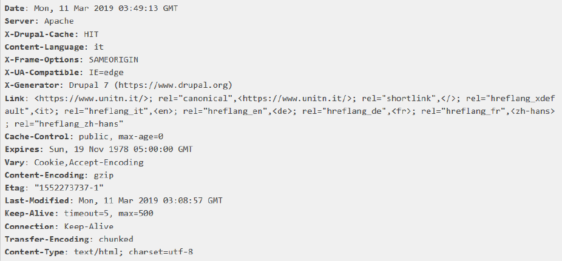
Noto ch equasi tutti i parametri sono capibili. Content-type mi dice che codifica uso dopo.
HTTP e HTTPS
HTTP è la versione non sicura, gira sulla porta 80, mentre https nella porta 443
HTTPS cifra i dati nella connessione, rendendoli difficili da sniffare.
L'esistenza dell'HTTPS è possibile solo attraverso i certificati.
I certificati certificano che il sito sia quello e che non sia un falso.
Una certification authority firma il certificato approvando i dati.
Un certificato vale per l'URL scritto sul tale. Posso avere i certificati asterisco:
*.unitn.it
vale per unitn.it e sottodomini!
Certificati HTTPS: Tipi
Grigio: Self-Certified
Non ho una certification authority che l'ha firmata, non sono affidabile
Verde non esteso:
Certificato ma senza dettagli.
Verde Esteso:
Certificato con dettagli.
Validità

Web Arch: Estensioni
CGI

CGI è un tipo di interfaccia che permette al webserver di eseguire applicazioni(basate su un URL) invece di servire file statici.
Ad esempio, se una pagina Web invia una query a un database o un utente sta inviando le informazioni del modulo al server in quel momento, gli script CGI vengono richiamati. Il server trasmette tali informazioni a un'applicazione in due modi GET o POST, quindi l'applicazione risponde al server di nuovo al browser. In questo modo, i browser ottengono alcuni risultati per l'utente.
La funzione di un CGI è di scansionare le informazioni ricevute dal browser e produrre una risposta adeguata, dopo il completamento dell'attività, lo script CGI viene terminato.
In Common Gateway Interface, il "Common" significa che può funzionare bene in qualsiasi sistema operativo o linguaggio di programmazione.
Precedentemente, gli script di shell UNIX e PERL sono stati usati per scrivere i programmi CGI, che è il motivo per cui è stato chiamato "script" CGI. Ma ora è possibile utilizzare qualsiasi linguaggio come C, C ++, Perl, Visual Basic o Python.
Sebbene CGI possa portare a potenziali problemi di sicurezza, il web server può anche trattare i file eseguibili come programmi CGI in alcune directory specifiche.
CGI gestisce ogni richiesta del client da un processo separato che aumenta il carico del server rendendolo più lento.
Estende l'architettura a 3 tiers aggiungendo al web server un servizio/ server che funziona dietro al web server.
Ho un funzionamento gerarchico!
È svantaggioso per lo spawn continuo di processi.
Provocando tempi lunghi e possibili blocchi!
Application Server
Aggiungo uno strato applicativo che esegue una determinata funzione. Questo server aspetta un input, lo esegue in base alla richiesta e lo rifornisce al webserver.

Per esempio tomcat e glassfish sono application server.
Architetture multi-tier
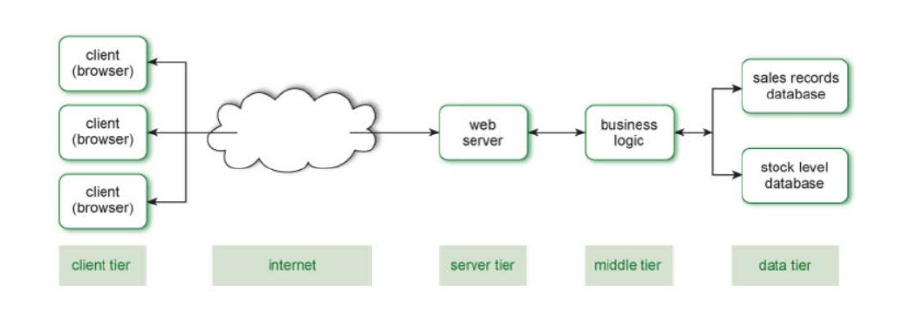
Dei servizi specializzati fanno una determinata funzione. Servizi già fatti, già pronti e più sicuri!
Ho il vantaggio che posso modificare più facilmente ogni livello per la scalabilità.
Network e architetture distribuite
Siamo passati da applicazioni monolitiche a client-server e quindi a N-tier, l'applicazione è stata suddivisa in un numero sempre maggiore di parti.
Questa tendenza è stata estesa in un approccio moderno chiamato architettura orientata ai servizi (SOA). SOA si basa sull'idea di scomporre un'applicazione in un insieme di attività molto più piccole che possono essere eseguite da piccoli "componenti software" indipendenti, ognuno dei quali esegue un'attività discreta chiamata comunemente servizio.
SOA
Service-oriented Architecture:
I componenti software forniscono servizi ad altri componenti tramite un protocollo di comunicazione, in genere su una rete. La parte che offre il servizio è conosciuta come un fornitore di servizi (un server) e la parte che invoca il servizio è un consumatore di servizi (un client).
Ogni servizio è (processo aziendale)
- Ben definito: un componente software con un'interfaccia e un risultato chiaramente definiti
- Out of the box: 'implementazione del servizio è completa e indipendente da qualsiasi prodotto, fornitore o tecnologia
- Uso di BlackBox: l'implementazione del servizio è nascosta (incapsulata) dal consumatore del servizio stesso.
Dei servizi potrebbero essere:
- Conversione di valuta;
- Controllo credito cliente;
- Fornitura dati metereologici;
- Archiviazione dati.
Il SOA è basato su dei principi:
Interoperabilità: Servizi implementati in diversi sistemi, zone o business domains, usando diverse tecnologie, dai linguaggi e piattaforme, che devono lavorare assieme per permettere a diversi clienti e provider di comunicare. Perchè avvenga con successo, devi fare in modo che si utilizzino dei protocolli standard tra i vari dispositivi.
Posizione: Gli utenti devono usufruire del sistema senza necessariamente sapere dove il servizio è posizionato geograficamente.
Reperibilità: Il consumatore deve avere accesso ai servizi rilevanti, cioè deve avere accesso ad appropriati metadata per il servizio.
Questo servizio è spesso effettuato attraverso dei registri.
Distinguiamo tra:
- Run-Time Discovery:(Dinamico) intendiamo che il software in esecuzione, eseguirà alcune configurazioni inviando dei probes sulla rete (o le query a un repository centrale se si vuole comunque pensare in questo modo) per ottenere l'indirizzo IP dei servizi remoti.
- Design-Time Discovery: Al tempo di design si cercano servizi rilevanti per il contesto.
Accoppiamento e Incapsulamento liberi: Le interfacce dovrebbero essere basate su standard di comunicazione più che proprietari e dovrebbero dare meno possibile informazioni sulla propria implementazione, effettuando incapsulazione.
Astrazione: Sia l'implementazione incapsulata, sia la tecnologia implementativa e la posizione fisica dei servizi dovrebbero essere completamente invisibili ai consumatori, i quali dovrebbero essere dipendenti solamente dalle interfacce pubbliche.
Autonomia: Più il servizio è autonomo, più controllo avrà verso le proprie implementazioni e sul run-time. Ciò implica maggiore flessibilità e potenzialità per evoluzione. Sia le implementazioni che il run-time possono essere modificate senza dare problemi ai clienti.
Statelessness: I protocolli utilizzati sono stateless, cioè non mantengono lo stato, migliorando la scalabilità e l'uptime(meno possibilità di crash(?)). Nonostante questo, i servizi dovrebbero rimanere stateless fino a quando è permesso loro fare ciò che devono fare senza stato.
Interfacce e contratti standardizzati:I servizi devono essere descritti in modo tecnico e standard. La qualità del servizio fornito, il livello di service agreement, response time avaliability... e costi! Metadata addizionali potrebbero coprire un range di informazioni, per esempio includere un rating della soddisfazione utente, per development futuri.
Riusabilità: I servizi devono essere progettati con l'idea di riutilizzarli. In generale, i service of terms dovrebbero includere una clausula per permettere il riuso in altri progetti.
Riconfigurazione dinamica: I sistemi service-based dovrebbero essere configurabili e riconfigurabili dinamicamente permettendo l'incorporare di nuovi servizi, ma mantenendo coerenza e integrità.
Web Services
Evoluzione SOA, si utilizzano servizi Web, dove descrive come un client accede su un server su internet, usando i protocolli noti.
Il protocollo noto è l'uso del protocollo HTTP REST.
Altri modi:
- XML (eXtensible Markup Language);
- SOAP (Simple Object Access Protocol);
- REST (Representational State Transfer);
- JSON (JavaScript Object Notation) basati.
I servizi web basati sui principi di progettazione SOA garantiranno che le applicazioni web scritte in vari linguaggi di programmazione possano essere eseguite su varie piattaforme e possano utilizzare i servizi Web per scambiare i loro dati su reti di computer in modo simile a quanto avviene nella programmazione concorrente su un singolo host.
Cloud Computing
Evoluzione SOA, utilizzo della cosidetta tecnologia CLOUD.
Definizione NIST:
- Il cloud computing è un modello per abilitare l'accesso alla rete onnipresente, conveniente e on-demand a un pool condiviso di risorse di calcolo configurabili (ad esempio reti, server, storage, applicazioni e servizi) che possono essere rapidamente fornite e rilasciate con un minimo sforzo o servizio di gestione interazione con il fornitore.
- Il cloud computing è la pratica di fornire servizi di elaborazione - server, storage, database, networking, software, analisi e altro - on-demand su Internet. È un mezzo per fornire ai servizi informatici un'utilità per i consumatori allo stesso modo di altri servizi come il gas e l'elettricità. Le aziende che offrono questi servizi informatici in genere fanno pagare per i servizi di cloud computing basati sull'utilizzo.
Si potrebbe considerare che, mentre SOA fornisce servizi su una rete, il cloud estende il principio ad altre risorse come la potenza di calcolo ed i dischi dischi e non si limita alla fornitura di servizi. Ci sono, ovviamente, molti dettagli impliciti: In che modo le risorse vengono addebitate, rese sicure, "pulite" dopo l'uso, ecc. Sono solo alcuni degli aspetti che devono essere considerati.
I servizi possono essere facilmente forniti a poco sforzo!
Caratteristiche principali:
- On demand web service: Un consumatore può automaticamente e unilateralmente ricevere capacità di computing come server time e network storage quando servono, senza richiedere un intervento umano.
- Broad network access: Le capacità di computing sono disponibili per tutto il network e accessibili attraverso meccanismi standard che promuovono l'uso da piattaforme clienti eterogenee(tablet,laptop,workstation e telefoni).
- Resource pooling: Il provider delle risorse fornisce a più consumatori in contemporanea utilizzando un modello a accesso condiviso, con differenti risorse fisiche e virtuali, dinamicamente riassegnate in base alla richiesta dell'utente. Abbiamo un sistema di astrazione che ci permette di evitare che l'utente abbia controllo o conoscenza su dove e come le resources sono distribuite, ma potrebbero ottenere informazioni sul luogo(datacenter, stato, città..).
- Rapid Elasticity: Capacità di adattarsi a forti richieste dei clienti, magari improvvise, con richieste di load molto più forti o molto più deboli del richiesto, in modo che sembrino illimitate e scalabili.
- Measure service: L'uso della risorsa dovrebbe essere misurato, monitorato, controllato e segnalato, permettendo trasparenza sia per il provider che per il cliente stesso, utilizzatore del servizio.
Divise in:
SaaS: Software as a Service
Fornisce applicazioni per utenti finali, fornite via web(dropbox, gdrive, gmail..);
PaaS: Platform as a Service
Fornisce tools e servizi per per sviluppare e fare deployment dell'app (Heroku);
IaaS: Infrastructure as a Service
Fornisce server, storage, network e virtual machines da utilizzare (VPS Hosting).
12/03/2019- Laboratorio
Seguo slide.
Dopo aver effettuato la preimpostazione fornitami nelle slide, creo la mia servlet:
xxxxxxxxxx281package it.unitn.disi.wp.lab04.exercise01;2import java.io.IOException;3import java.io.PrintWriter;4import javax.servlet.Servlet;5import javax.servlet.ServletException;6import javax.servlet.http.HttpServlet;7import javax.servlet.http.HttpServletRequest;8import javax.servlet.http.HttpServletResponse;9public class ServletEx1 extends HttpServlet {1011protected void doGet(HttpServletRequest request, HttpServletResponse response) throws ServletException, IOException {13 response.setContentType("text/html;charset=UTF-8");14 try (PrintWriter out = response.getWriter()) {15 out.println("<!DOCTYPE html>");16 out.println("<html>");17 out.println("<head>");18 out.println("<title>Servlets and forms: Exercise 01</title>");19 out.println("</head>");20 out.println("<body>");21 out.println("First name " + request.getParameter("first_name"));22 out.println("<br>");23 out.println("Last name " + request.getParameter("last_name"));24 out.println("</body>");25 out.println("</html>");26 }27 }28}Il doGet è un metodo che riceve le richieste GET effettuata alla servlet. Il parametro HttpServletRequest request rappresenta la richiesta che ho ricevuto mentre HttpServletResponse response rappresenta la risposta che fornirò, cioè la servlet di uscita.
PrintWriter out = response.getWriter() crea uno stream di output sulla servlet di uscita, ed inizia a printare una pagina web.
Oltretutto, utilizzo request.getParameter per ottenere i parametri che mi interessano.
La configurazione servlet la effettuo su web.xml
xxxxxxxxxx201 2<web-app ...>3<servlet>4 <servlet-name>ServletEx1</servlet-name>5 <servlet-class>it.unitn.disi.wp.lab04.exercise01.ServletEx1 </servlet-class>6</servlet>7<servlet-mapping>8 <servlet-name>ServletEx1</servlet-name>9 <url-pattern>/ServletEx1</url-pattern>10</servlet-mapping>11<session-config>12 <session-timeout>13 3014 </session-timeout>15</session-config>16 <welcome-file-list>17 <welcome-file>exercise01.html</welcome-file>18 </welcome-file-list>19</web-app>20I parametri sono intuitivi dal nome.
25/03/2019
Cookies e Sessioni:
Ci permettono, nel protocollo stateless, di mantenere dei dati(come login).
Ci sono due versioni di HTML
- 1.0 apre una connessione per ogni richiesta;
- 1.1 apre una connessione e la mantiene aperta per più richieste.
Attraverso i cookie e sessioni vedo quali dati avevo già inserito e quali no. Crea quasi uno stato, in un protocollo stateless, mantenendo un accesso cosicchè l'utente non debba reinserirlo subito.
Session state information
Precedentemente, per mantenere lo stato, rimandavo al cliente i dati del form indietro nel form successivo, in maniera nascosta, in modo che l'ultimo form aveva tutti i dati necessari.

Approccio pesante!
Ora, invece abbiamo l'utilizzo di
- COOKIES: Salvati sul client, stato del client;
- SESSIONI: Salvati sul server, stato del server.
utilizzando le Servlet, mantengo lo stato nei seguenti modi:
Includo parametri GET nell'URL;
URL Rewriting: Riscrivo i parametri man mano che l'utente va avanti.
Field Form nascosti;
<INPUT Type="hidden">mi permette di nascondere i dati.Poco sicuro, cache dei motori di ricerca.
Cookies con le Servet APIsession tracking tools.
Creati dal web browser, due tipi:
- Con scadenza: Hanno una data di scadenza oltre la quale non sono più validi.
- Senza scadenza: Alla chiusura del browser vengono eliminati.
Passano nell'HEADER delle richieste, vengono creati dal server.
Al cookie rimane il PATH e il TOKEN inviato dal server dopo che il browser ha fatto la richiesta.
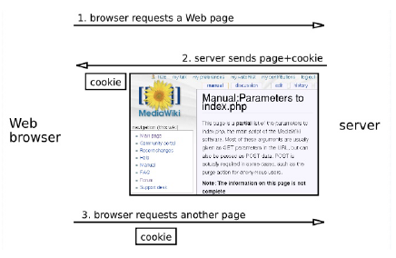
session: Serie di interazioni tra client e web server
Tutto parte scambiandosi un token, che è un id di sessione.
Cookies
In andata:

In ritorno:

Io client lo memorizzo:

Ora ne può settare un altro:

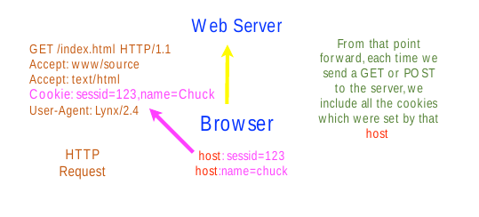
I cookie possono tracciare ciò che faccio e dove vado! Attraverso IFRAME o richieste multiple, posso salvare cookie particolari e ottenere una specie di storico di siti visitati, perdendo privacy.
Servlet Cookies API
javax.servlet.http.Cookie
Getter:
getName(),getValue(),getPath(),getDomain(),getMaxAge(),getSecure()...Setter
setValue(),setPath(),setDomain(),setMaxAge()...
Ottenere i cookies
Cookie[] HttpServletRequest.getCookies()
Aggiungere un cookie
HttpServletResponse.addCookie(Cookie cookie)
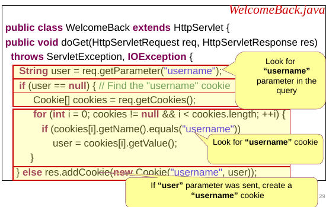
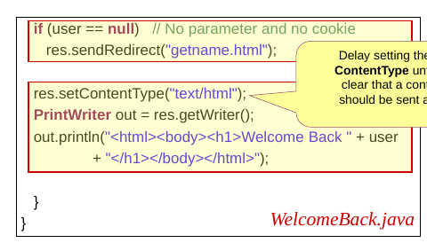
Session Management
La sessione si gestisce lato server:
Una sessione cattura la nozione di continua interazione tra server e client.
La session Management dovrebbe essere efficiente:
Il client non dovrebbe inviare lo shopping cart completo ogni volta che un prodotto è stato aggiunto!
Due meccanismi utilizzabili:
- Session Cookies
- URL Rewriting.

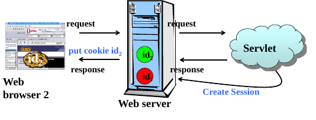

Le liste di sessioni (ID list) è disponibile solo sul server, mentre il cookies sono settate nel client side.

Questo però mi permette, avendo i cookie di qualcun altro, di entrare nella sua sessione!
Sì, però possiamo fare in modo che le altre pagine web non ottengano il nostro cookie.
Accedere ai dati di sessione
HttpServletRequest.getSession() accede all'object session. Se non ce n'è una viene creata.
per non crearla se non esistenteHttpServletRequest.getSession(false).
Le sessioni di solito scadono dopo x minuti arbitrari, generalmente 30.
Metodi HttpSession
I dati di sessione sono dentro una hash-table:
setAttribute(String name,Object value)Object getAttribute(String name)
Altri metodi abbastanza intuitivi:
getId()removeAttribute()Enumeration getAttributeName()isNew()getCreationTime()getLastAccessedTime()
Curiosità: Con i processori AMD posso avere un terabyte di ram per processore, mentre per gli Intel fino a 1.4 TB di ram.
Scadenza Sessioni
Ho un max-age che mi setta il massimo che può rimanere attiva la sessione.
Serverside session.invalidate() dopo il timeout di sessione.
xxxxxxxxxx51<web-app>2 <session-config>3 <session-timeout>10</session-timeout>4 </session-config>5</web-app>Dopo 10 minuti, la sessione scade.
Settabile e gettabile con:
session.setMaxInactiveInterval()
session.getMaxInactiveInterval()
Cookie di terze parti
Cookie che NON centrano con il sito visualizzato.
Ogni cookie è BLOCCABILE.
Cookies: rischi
I cookies possono creare rischi alla sicurezza, perchè ogni server può mettere i cookie non solo propri(cookie di terze parti) e può leggere cookies di ogni sito memorizzato.
Cosa succede se ho un computer condiviso?
- Cookie di più utenti nella stessa macchina!
Soluzioni
Uso session cookies, cioè cookies che funzionano SOLO in una determinata sessione.
Uso URL Rewriting: L'URL in GET ha un valore
sessID=IDdove salva l'ID di sessione.Ci permette l'utilizzo delle sessioni con i cookie disabilitati!
Il contatore del timeout session viene resettato ogni richiesta, se non faccio una richiesta entro tot minuti, allora perdo la sessione(timeout).

URL Rewriting: Servlet
String HttpServletResponse.encodeURL(String url)Hyperlink HTMLString HttpServletResponse.encodeRedirectURL(String url)HTTP Redirections
Questo mi permette di vedere se la sessione ha senso venga codificata nell'URL, cioè se ho un session cookie, l'URL rimane senza modifiche, mentre se non trova un cookie, lo mette.
Qualche server implementa entrambi in modo identico.
Request Dispatcher
Come chiamare dal server un'altra risorsa del server.
getServletContext().getRequestDispatcher("x"), richiedo la risorsa x.
RequestDispatcher è un object usato per inviare una richiesta a qualsiasi altra risorsa del server.
La risorsa può essere dinamica o statica.
Metodi
void forward(ServletRequest request,ServletResponse response)inoltra la richiesta da un servlet ad un'altra richiesta. È importante non scrivere il contenuto della richiesta se faccio ciò.void include(ServletRequest request, ServletResponse response)Include il contenuto in una risorsa in risposta della servlet corrente(e forse dovrò scrivere il contneuto prima o poi)
Passare i dati
Ho tre modi diversi:
request.setAttribute("key", value);Dati utilizzabili solo per questa richiesta.session.setAttribute("key", value);Dati utilizzabili per più richieste, però nella stessa sessione.context.setAttribute("key", value);Dati utilizzabili in futuro per ogni client.
Session tracking remoto e locale

- Local storage: Storage locale interagibile solo con HTML5 e JS.
- Session Storage: Disponibile per la Browser session e la session storage è eliminata quando la sessione viene chiusa o il browser viene chiuso. Disponibile solo per browser con HTML5 come il local storage.
- I cookies sono accessibili ovunque.
I cookie ti consentono di memorizzare le stringhe. Sessione e Archiviazione locale consentono di memorizzare le primitive JavaScript (tipo di dati), ma non gli oggetti o gli array. Storage di sessione consente di archiviare qualsiasi tipo di oggetti supportati tramite il linguaggio di programmazione o il framework di Server Side.
Archiviazione locale e archiviazione sessione (web storage) sono nuove API e sono quasi gli stessi (sia in API che in capacità) con l'unico singola eccezione di persistenza. L'archiviazione della sessione è disponibile solo per durata della sessione del browser (apertura e chiusura) e viene cancellata quando la scheda o la finestra è chiusa.
Tutti e tre i metodi sono utilizzati per salvare i dati nella zona clientside, hanno la propria capacità e la propria expiration date.
Local storage e Session storage sono i migliori per dati non protetti (dati con informazioni normali come nome, genere), ad esempio, punteggi in quiz e giochi.
I cookies sono migliori per l'autenticazione e il mantenimento della sessione
I cookie consentono solo di memorizzare solo 4 KB di dati mentre lo storage Web (sia locale che di sessione) fornisce circa 10 MB di spazio per i dati da memorizzare.
Ricordiamo che essendo stateless, alla chiusura del browser senza queste funzioni perderemmo i dati.
I dati di sessione sono controllati dall'applicazione server side in modo assoluto.
Lo svantaggio è che il server deve dare potenza e memoria per gestire questi dati, tra il quale inviare i dati quando il client lo richiede ad ogni richiesta. Il server deve supporre anche l'eliminazione dei dati da parte del client.
localStorage, sessionStorage e cookie sono tutti soggetti a regole "same-origin", il che significa che i browser dovrebbero impedire l'accesso ai dati tranne il dominio che imposta le informazioni con cui iniziare.

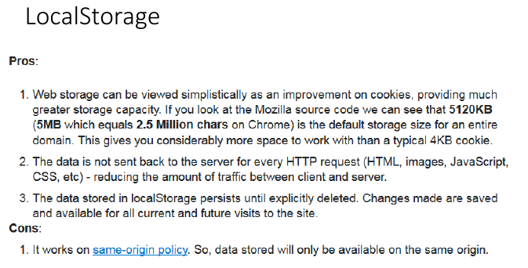
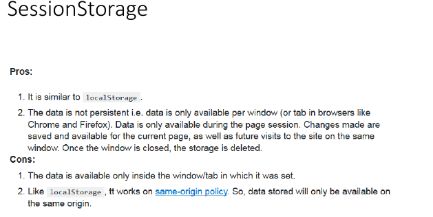

I limiti sono consigliati, MOLTE volte i browser mettono limiti propri e cambia da desktop a mobile.


Filtri
Un filtro è un oggetto che trasforma una request o modifica una response.
Ci sono preprocessori che gestiscono il tutto prima che raggiunga la servlet e postprocessori che modificano la response appena uscito dalla servlet.
Schema di funzionamento
Filtro in ingresso
- Il client invia una richiesta al server e il filtro la intercetta
- Il filtro preprocessa la richiesta, raccogliendo eventuali informazioni
- Il filtro richiama il metodo chain.doFilter (lo vedremo meglio dopo) per invocare la prossima servlet o il webcomponent
- Il webcomponent invocato genera la risposta.
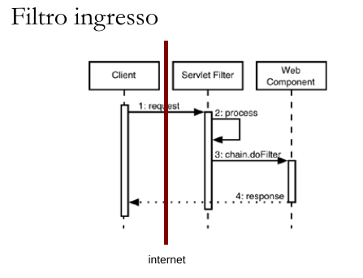
Filtro in uscita
- Il client invia una richiesta al server e il filtro la intercetta.
- Il filtro richiama il metodo
chain.doFilter. - Il web component corrispondente risponde, generando la risposta.
- La risposta viene intercetta dal filtro e viene processata.
- La risposta eventualmente modificata viene restituita al client.
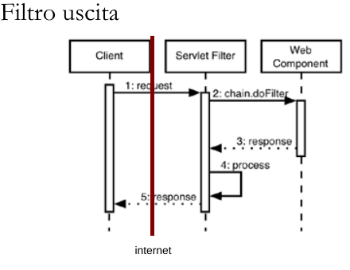
Schema logico

Ipotesi di utilizzo
- In particolare l'applicazione pratica che noi vedremo sarà un esempio di filtro di autenticazione, ossia il nostro filtro fornirà un forma di protezione da tentativi di accesso non autorizzato a certe risorse sul webserver.
- Altri esempi di possibile filtro: una filtro che effettua del logging con informazioni riguardo al client oppure ai tempi di elaborazione delle pagine oppure un filtro di compressione dati.
26/03/2019 - Laboratorio
Sessioni
Come gestirle?
Associare un cookie per ogni client. Fai attenzione a:
- Estrarre i cookie che memorizzano la sessione;
- Imposta correttamente la data di scadenza per il cookie;
- Collega ogni richiesta usando un hash;
- Genera l'id della sessione.
xxxxxxxxxx71String sessionID = <create_an_unique_session_id>2HashMap<String, String> sessionInfo = new3HashMap<>();4HashMap<String, HashMap<String, String>> globalTable = <get_the_table>5globalTable.put(sessionID, sessionInfo);6Cookie sessionCookie = new Cookie(“JSESSIONID”,sessionID);7response.addCookie(sessionCookie);URL rewriting
Aggiungi ulteriori informazioni alla fine di OGNI URL in modo che il server possa identificare il sessione.
PRO:
- Funziona anche se i cookie sono disabilitati.
CONS:
- Codifica di ogni URL dell'applicazione Web.
- Tutte le pagine devono essere generate dinamicamente.
- Non funziona per segnalibri e collegamenti da altri siti.
• http://host/path/file.html?jsessionid=1234 è un esempio applicativo. jsessionid identifica la sessione.
Hidden form fields
Hanno più contro che pro, non ha senso usarli.
uso di type=hidden nel campo <input>.
J2EE
Ha session tracking automatico, usa gli oggetti del server per puntare ad un automatic reference cookie.
Metodi:
request.getSession()ritorna la sessione attuale.- Dietro le quinte, il sistema esamina le informazioni extra sui cookie o sull'URL e vede se corrisponde la chiave per un oggetto di sessione precedentemente memorizzato. Se è così, restituisce quell'oggetto. Se no, ne crea uno nuovo, assegna un cookie o informazioni sull'URL come chiave e restituisce quella nuova sessione oggetto.
request.getSession (): accesso all'oggetto di sessione (HttpSession).session.getAttribute («nome»): restituisce il valore dell'oggetto associato alla sessione attributo con il nome passato come parametro.session.setAttribute («nome», valore): memorizza le informazioni in un attributo di sessione.session.removeAttribute («nome»): scarta un attributo specifico della sessione.session.invalidate (): scarta l'intera sessione.session.getAttributeNames (): restituisce i nomi di tutti gli attributi nella sessione.session.getId (): restituisce l'identificativo univoco della sessione.session.isNew ():truese la sessione è nuova (al client).session.getCreationTime (): restituisce l'ora in cui la sessione è stata creata.session.getLastAccessedTime (): restituisce l'ora in cui la sessione è stata l'ultima inviato dal cliente.session.removeAttribute («nome»): scarta un attributo specifico disession.getMaxInactiveInterval (): restituisce la quantità di tempo della sessione in inattività prima di essere invalidata.session.setMaxInactiveInterval («seconds»): imposta la quantità di tempo della sessione in inattività prima di essere invalidata.
Cookies
I cookie sono un modo generale utilizzato dagli script lato server per memorizzare / conservare le informazioni sul client.
I cookie sono coppie di stringhe chiave-valore memorizzate dal client, vengono restituiti nell'intestazione per ogni richiesta per il server che li ha creati. Di solito un client memorizza un massimo di 20 cookie per il server (massimo 300 cookie in totale).
Ogni cookie ha una scadenza (tempo massimo):
- 0: il cookie verrà eliminato.
- -1: il cookie verrà memorizzato fino a quando il browser non sarà aperto.
Ogni browser memorizza la propria raccolta di cookie.
Nelle servlet
javax.servlet.http.Cookie: Cookie(String key, String value)
Metodi principali
cookie.setValue(«newValue»);cookie.setMaxAge(40);//In seconds
Aggiungere un cookie ad una response
response.addCookie(cookie);
IMPORTANTE: Ciò è da fare prima di ottenere il metodo
getWriter()
01/04/2019
Listener
Un listener è un event hanlder che il server invoca quando un determinato evento avviene.
In termini di design: Observer pattern.
Un osservatore(in questo caso il listener) è avvisato di quando l'evento avviene nel server.
Usi tipici:
DB management;
Se non uso un listener, ogni utente dovrà connettersi al DB! Questo crea un rallentamento da parte dell'utente e da parte del server!
Connection Pool: Istanzia N connessioni al DB(Facendo partire N thread), ogni volta che arriva una richiesta si connette con un thread al Servizio DB. Ci riconnette al DB in qualsiasi situazione, incluso il timeout(Session Timeout dal server SQL).
Dependencies Management;
Monitoring.
Poichè dopo un po' il sito "scade", utilizzo un JS per tenere viva la connessione, rinnovando il cookie. Il servizio keep-alive prende un sacco di ram server-side e client-side.
Tipi di listerner:
ServletContextListenerweb app inizializzata/ spegnimento(Useremo principalmente questa)ServletRequestListenerRequest handler start/stopHTTPSessionListenersession creata/invalidataServletContextAttributeListenercontext attribute aggunto,rimosso, replicatoHttpSessionAttributeListenersession attribute aggiunto, rimosso, replicato
Per usare un listener devo implementare l'appropriata interfaccia e registri nel deployment descriptor.
Database nelle App Web
Tipi di database
- SQL: Database Relazionali
- NoSQL: Not Only SQL
I dati variano da semplici messaggi di testo a file video ad alta risoluzione. Il tradizionale RDBMS non è in grado di far fronte alla velocità, al volume e alla varietà dei dati richiesti da questa nuova era. Sono dunque nati i NoSQL(Che sono pure open source).
Database SQL
Nel corso di DB.
MariaDB:
- Se crasha MariaDB: Devo ricontrollare gli indici! (Non sono operazioni da poco.)
- Posso suddividere le tabelle grandi in tabelle più piccole uguali per avere accesso più veloce.
- Subquery aggiunte dopo.
PostgreeSQL:
- Se crasha PostgreeSQL: Risale con gli indici giusti.
- Possibilità di subquery e vettori.
MSSQL:
- Gratis per poche grandezze;
- MONOTHREAD, grande problema.
SQLLite:
- Comodo, versione più leggera di SQL, ha meno comandi
ALTER, salvato in un singolo file; - Non ho controllo del tipo;
- Passa comunque per un accesso ad un file(più lento).
La gente utilizza i software con licenza perchè ho meno responsabilità, perchè pago una licenza, dunque se succede un problema non sono pieno di problemi perchè la patch di sicurezza da applicare al software non è a carico mio come un OpenSource.
Da sapere la differenza del timestamp e data. Attenti al fuso orario.
Inserire sempre il timestamp nelle tabelle! Stare attenti al server che l'orario del server sia giusto. Oltretutto, devo stare attento alla codifica del DB stesso.
Database NoSQL
Le caratteristiche di base dei database NoSQL sono:
- Senza uno schema;
- Distribuiti e scalabili orizzontalmente;
- Hardware commodity: È un termine per dispositivi a prezzi accessibili che sono generalmente compatibili con altri dispositivi di questo tipo. In un processo chiamato commodity computing o commodity computing computing, questi dispositivi sono spesso collegati in rete per fornire maggiore potenza di elaborazione quando coloro che li possiedono non possono permettersi di acquistare più elaborati supercomputer, o vogliono massimizzare i risparmi nella progettazione IT.
I database NoSQL offrono tante funzioni per risolvere i problemi che il DB SQL Relazionale aveva per archiviare i dati non strutturati (il cosidetto blob).
Schemi dinamici
I database NoSQL consentono allo schema di essere flessibilie, con nuove colonne aggiungibili in qualsiasi momento.
Le richè possono o non possono avere valori per colonne e non ho applicazione rigida per i tipi delle colonne.
Ho più flessiblità ai cambiamenti!
Varietà dei dati
I database NoSQL supportano qualsiasi dato.
Supportano dati strutturati, semi-strutturati e non strutturati da memorizzare. Supporta log, file di immagini, video, grafici, jpegs, JSON, XML da memorizzare e utilizzare così come sono senza alcuna pre-elaborazione.Riducono quindi la necessità di ETL (abbreviazione di Extract -Transform - Load).
Cluster ad alta Avaliability
I database NoSQL supportano storage distribuito!
Ho anche scalabilità orizzontale.

Attenzione, non è LOAD BALANCING, se un server va offline, l'altro, con arp, fa finta di essere il server primario cambiando il proprio mac address.
Open Source
I DB sono OpenSource! Posso inoltre modificare il codice del DBMS NoSQL, senza problemi sulla licenza indipendentemente dall'uso.
Non dipendenza da SQL
I database SQL non dipendono solo da SQL per recuperare i dati, anzi permettono un accesso CRUD:
- Create
- Read
- Update
- Delete
Anche dette API.
Permettono anche accesso DML(Data manipulation language).
Tipi di NoSQL
Esistono quattro tipi di basi di dati NoSQL.
- database di valori-chiave (key value)
- database orientato alle colonne (column oriented)
- database orientati ai documenti (document oriented)
- database Graph.
Non ho :
- Join
- Non ho indici modifiicabili(li gestisce il DBMS Automaticamente)
Posso avere più Database dentro al database (Inception)
Questa gerarchia è comune a tutti i database NoSQL, ma le terminologie potrebbero variare.
Key-Value data model
- La tabella contiene molti spazi chiave e ogni spazio chiave può avere molti identificatori per memorizzare coppie di valori chiave.
- Lo spazio-chiave è simile alla colonna nel tipico RDBMS e il gruppo di identificatori presentato sotto lo spazio-chiave può essere considerato come righe.
- È adatto per la costruzione di applicazioni semplici, non complesse e disponibili. Poiché la maggior parte dei database di valori chiave supportano nell'archiviazione della memoria, possono essere utilizzati per creare un meccanismo di cache.
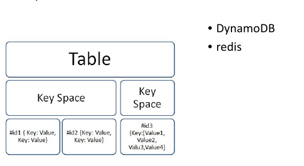
Column Oriented
- Database basati su colonne sono sviluppati sulla base del whitepaper di Big Table pubblicato da Google. Ciò richiede un approccio diverso rispetto al tradizionale RDBMS, in cui supporta l'aggiunta di un numero sempre maggiore di colonne e una tabella più ampia.
- Dal momento che la tabella sarà molto ampia, supporta il raggruppamento della colonna con un nome di famiglia, denominandola "Famiglia di colonne" o "Super colonna". La famiglia di colonne può anche essere facoltativa in alcune basi di dati della colonna.
- Secondo la filosofia comune dei database NoSQL, i valori delle colonne possono essere distribuiti in modo spartano. (Utile per avere integrazione di più sistemi di più linguaggi diversi!)
- La tabella contiene famiglie di colonne (facoltativo). Ogni famiglia di colonne contiene molte colonne. I valori per le colonne potrebbero essere scarsamente distribuiti con coppie chiave-valore.I database orientati alle colonne sono alternativi ai database di Data warehousing tipici e sono adatti per il tipo di applicazione OLAP.

Document Oriented
I database orientati ai documenti offrono supporto per la memorizzazione di dati semi-strutturati. Può essere JSON, XML, YAML o persino un documento di Word. L'unità di dati è chiamata documento (simile a una riga in RDBMS). La tabella contiene documenti ed è chiamata raccolta(collection).
Il database contiene molte raccolte.
Una raccolta contiene molti documenti.
- Ogni documento può contenere un documento JSON o un documento XML o YAML o anche un documento Word.
I database di documenti sono adatti per applicazioni basate su Web e applicazioni che espongono servizi RESTful.

Graph Database
Database gestito a grafo: Contiene nodi e vertici, I database di grafici ci consentono di memorizzare ed eseguire operazioni di manipolazione dei dati su nodi, relazioni e attributi di nodi e relazioni.
I database di grafi funzionano meglio quando i grafi sono grafi diretti, cioè quando vi sono relazioni tra grafi.
Ogni grafo è simile ad una tabella, ho :
- Nodo;
- Proprietà di esso;
- Relazioni;
- Proprietà di esse.
Adatti per i social media.

Problemi NoSQL
no ACID transactions:
La maggior parte dei database NoSQL non supporta le transazioni ACID. Per esempio:
MongoDB(A quanto pare le supporta nelle ultime versioni), CouchBase, Cassandra.- Atomicità: Le transaction devono essere atomiche in natura. (All or nothing rule). Se una parte della transaction non va, devo effettuare un rollback e annullare tutta la transazione.
- Consistenza: Il Database deve assicurare che solo i dati validi possono essere salvati. Questo dipende dal NoSQL che sto usando.
- Isolazione: Il database permette multiple transazioni in parallelo e le tiene isolate.
- Durabilità: Transazioni persistenti del DB.
API:
Alcuni NoSQL supportano solo API e non SQL.
Lee-Way of CAP Theorem:
Consistenza, Disponibilità e Partizionamento.
- Consistenza: Le informazioni sono le stesse in tutto il sistema distribuito.
- Disponibilità(Availiability): Deve essere in un High Avaliable System e sempre disponibile a rispondere alle richieste dei client(non deve quindi ignorarle), se è online.
- Partizionamento: Deve essere e rimanere operabile nonostante perdita arbitraria di messaggi, creata da problemi di network.
Non sono rispettati tutti e tre, ne supportano generalmente solo due.
No JOIN:
Non tutti le supportano.
JDBC
Insieme di classi JAVA (Java Database Connectivity) in stile ODBC per interfacciarsi ai SQL databases.
Provide an object interface to relational database Based on the X/Open SQL CLI (Call Level Interface) X/Open C.
Standardizza l'accesso al DB attraverso JAVA.
Richiede che i drivers accettino una chiamata CLI e trasforma in chiamate native per l'accesso al db. CLI fornisce un driver manager che conversa con i driver attraverso un Service Provider Interface (SPI).
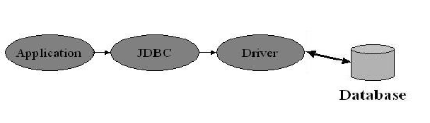
Architettura
Ti permette di scrivere DBMS-Indipendente.
Fornisce due interfacce:
- Interfaccia Applicativa
- Interfaccia Driver
Uso il driver Manager per caricare automaticamente il giusto driver JDBC e parlare al database corretto(MariaDB,Postgree...)
Jdbc:<subprotocol>:<domain name>
example jdbc:odbc://www.bob.com/MyJavaDB
Microsoft CLI ODBC
Microsoft’s ODBC Windows API standard for SQL is an extended version of the SAG CLI.
Controindicazioni
- specification è controllata da Microsoft
- ODBC drivers sono difficili da creare e mantenere.
- Crea molto overhead.
- Mai veloci come le API Native.(10%)
Transaction
Nelle transaction sono principalmente in autocommit mode.
Stored Procedure: supporto alle chiamate.
Schema classi Java
JDBC Core Interfaces
- Interfacce e classi i quali ogni driver JDBC driver deve implementare
Driver:
DriverManager: Gestisce i driver e le dispense di oggetti connection .
Driver: Quando un driver è caricato, crea una istanza di se stesso e la registra nel drivermanager.
DriverPropertyInfo: Fornisce variabili pubbliche che ti lasciano dinamicamente trovare le proprietà che quella connessione richiede.
Connection: Interfacce che forniscono un contesto per eseguire SQL Statements e processare i loro risultati
Statement: Interfacce che
- Statement: Esegue un SQL statement statico e ottieni i suoi risultati.
- PrepareStatement: Invia comandi precompilati in SQL, serve come container di query che eseguiamo più volte. Più veloce e più sicuro(anti SQL Inject)
- CallableStatement: Invia la procedura salvata usando la sintassi JDBC.
ResultSet: Interfacce di due tipi
- ResultSet: Fornisce i metodi per accedere al risultato di una query
- ResultSetMetaData: Fornisce metadata sul numero di colonne, tipi, proprietà di un resultSet.
Java language extensions
- Java language extensions per SQL.
Java utility extensions
estensione of java.util.Date
Utility: Classi che
Daterappresenta SQL DateTimerappresenta SQL TimeTimestamprappresenta SQL TImestamp
DatabaseMetaData: Interfacce che forniscono informazioni generali o di loro stesse sui metadati che puoi ottenere a runtime.
SQL metadata interfaces
- dynamically discover what SQL databases and JDBC drivers can do
Step di uso per DB
- Caricare il driver JDBC Appropriato;
- Richiedi connessione al DB;
- Invia la query SQL al DB;
- Processa il risultato.
Apache Derby
Integrato con JAVA EE 6
Due modalità:
- SERVER multiutente
- EMBEDDED monoutente.
Java DB Database (e' possibile scegliere tre modalita' diverse): Funzionamento come:
In memory DB (interamente in memoria, monoutente)
Server DB (server in ascolto su porta, multiutente)
Tre diverse modalita' noi sceglieremo quella normale
- Le altre due si riferiscono a connessioni che possono transitare come finto protocollo http per attraversare firewall
Local DB (server autoincluso nella VS applicazione: attenzione diventa MonoUtente)
02/04/2019 - Laboratorio
Seguo slide JDBC.
08/04/2019
Java Server Pages JSP
È una tecnologia Web estensibile che utilizza dati di modelli, elementi personalizzati, linguaggi di scripting e oggetti Java lato server per restituire il contenuto dinamico a un client.
Servlet Java Un programma Java che estende le funzionalità di un server Web, generando contenuto dinamico e interagendo con i client Web utilizzando un paradigma di request-response.
Il controllo delle informazioni deve essere effettuato sia a livello JS che a livello Server!
In genere i dati del modello sono elementi HTML o XML.
Gerarchicamente 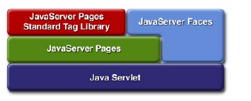
manca slide
Mentre prima facevamo HTML in JAVA
xxxxxxxxxx31out.println(“<HTML><BODY>”);2out.println(“Hello World ”);3out.println(“</BODY></HTML>”);Dove ad ogni aggiunta dovevamo ricompilare.
Ora possiamo fare, con JSP, una separazione tra:
- GUI design;
- Business Logic.
il Web designer puo’ occuparsi della parte HTML, Il Java developer invece si concentrera’ sulla programmazione delle parted di business logic e data modelling richiesta dall’applicazione.
In JSP:
xxxxxxxxxx51<html>2 <body>3 <%out.println("helloworld!");%>4 </body>5</html>Contiene:
- Tag HTML;
- JSP Tag(
<% codice java%>).
Alla richiesta della pagina JSP:
- Esegue gli elementi JSP
- Unisce i risultati JSP con parti statiche;
- invia la pagina composta dinamicamente al browser.
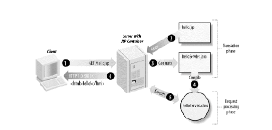
Con un database NoSQL la coerenza dobbiamo gestirla manualmente!
MySQL ha i vincoli di costraint, NoSQL no.
Differenze con serlvet
| Funzione | Servlet | JSP |
|---|---|---|
| Codice | HTML in JAVA | JAVA in HTML |
| Contenuto | Poco leggibile | Più leggibile |
| Compilazione | Servlet | Serlvet |
Entrambe hanno pro e contro.
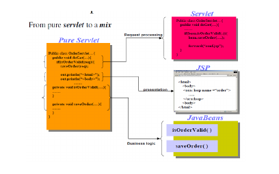
DI solito si usa un unione delle due!
Ciclo di vita JSP
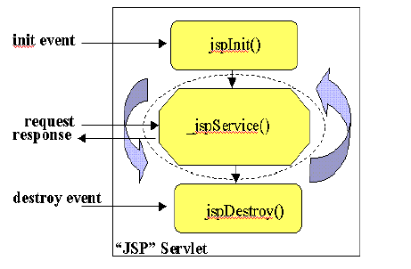
Inizializzazione e Finalizzazione
Inizializzazione
leggi i dati di configurazione persistenti
Inizializza le risorse
Esegui qualsiasi altra attività singola al momento dell'inizializzazione.
- Possibile se sovrascrivo il metodo
jspInit()dell'interfaccia JspPage
- Possibile se sovrascrivo il metodo
Finalizzazione
leggi i dati di configurazione persistenti
Rilascio le risorse
Esegui qualsiasi altra attività singola al rilascio delle risorse, una volta sola.
- Possibile se sovrascrivo il metodo
jspDestroy()dell'interfaccia JspPage
- Possibile se sovrascrivo il metodo
xxxxxxxxxx131<% page import="database.*" %>2<% page errorPage="errorpage.jsp" %>3<% Declare initialization and finalization methods using JSP declaration -4%>5<%!6 private BookDBAO bookDBAO; public void jspInit() {7// retrieve database access object, which was set once per web application8 bookDBAO = (BookDBAO)getServletContext().getAttribute("bookDB");9if (bookDBAO == null) System.out.println("Couldn't get database.");10 }11 public void jspDestroy() { bookDBAO = null;12 }13%>Elementi
<%-- Commento --%>- Non sono inclusi nella pagina di output. Per includerli, usa il commento HTML.
<%! Dichiarazione%>Blocco java usato per definire variabili globali(nella classe) e metodi nella servlet generata.
Inizializzati quanto JSP viene inizializzata e rimangono disponibili nella pagina corrente.
Esempi
xxxxxxxxxx31<%! String nome=“pippo”; %>2<%! public String getName()3{return nome;} %>
<%@ Direttiva %>Meccanismo di messaggio per passare le informazioni da codice JSP al WebCointainer al momento di compilazione.
Non generano output.
Direttive principali sono:
pageincludeinclude risorse statiche a livello compilativo.taglibinclude librerie di tag personalizzate.Esempi
xxxxxxxxxx41<% page import=“java.awt.*,java.util.*”%>2<% page isThreadSafe=“false” %>3<% page errorPage=“URL” %>4<% page iisErrorPage=“true” %>Oppure:
xxxxxxxxxx191Classi importate23`<%@ page import=“java.awt.*,java.util.*”%>`45Gestione multithread67`<%@ page isThreadSafe=“false” %>`89`<%@ page isThreadSafe="true" %> <%!Default %>`1011Gestione errori1213`<%@ page errorPage=“URL” %>`1415`<%@ page isErrorPage=“true” %>`1617I tipo di MIME generato1819`<%@ page contentType="MIMEType" %>`
Esempi di inclusione
header.jsp
xxxxxxxxxx31<html>2<head><title><%= title %></title></head>3<body>footer.jsp
xxxxxxxxxx21</body>2</html>index.jsp
xxxxxxxxxx71<%! String title = "Addition"; %>2<% include file="header.jsp" %>3The sum of <%= request.getParameter("x") %>4and <%= request.getParameter("y") %> is5<%= Integer.parseInt(request.getParameter("x")) +6Integer.parseInt(request.getParameter("y")) %>7<% include file="footer.jsp" %>Ricordiamo che
includeinclude la pagina a momento di compilazione.altre direttive:
xxxxxxxxxx51contentType="type"2info=”description"3errorPage="path"4isErrorPage="boolean"5import="package"<%= Espressione %>Un espressione è una notazione abbreviata che invia l'espressione Java valutata al client (valutata sotto forma di stringa).
Esempio:
xxxxxxxxxx412<% page import=“java.util.*” %>3Sono le <%= new Date().toString() %>4Da notare che manca il
;!
<% Vari script(scriptlet) %>Cattiva programmazione, non sono da usare.
Uno scriptlet è un blocco di codice Java eseguito al momento di elaborazione della richiesta.
- Inseriti nel metodo
service()del servlet Tomcat. - Elaborati per ogni richiesta ricevuta dal servlet.
- Inseriti nel metodo
Usate normalmente per cose che le espressioni non possono fare:
- Settare
status codeseresponse header; - Scrivere log sul server;
- Update del DB;
- Eseguire loops e condizionali.
- Settare
Esempio (da non seguire)
xxxxxxxxxx151<%2Iterator i = cart.getItems().iterator(); while (i.hasNext()) { ShoppingCartItem item =(ShoppingCartItem)i.next();3BookDetails bd = (BookDetails)item.getItem();4%>5<tr> <td align="right" bgcolor="#ffffff">6<%=item.getQuantity()%>7</td>8<td bgcolor="#ffffaa"> <strong><a href=“9<%=request.getContextPath()%>/bookdetails?bookId=10<%=bd.getBookId()%>"><%=bd.getTitle()%></a></strong>11</td>12<%13// End of while14}15%>Perchè non usarli?
- Anche se la sintassi JSP consente l'inserimento di frammenti di codice Java, variabili e dichiarazioni di metodo, è necessario provare a ridurre al minimo la quantità di codice Java nel corpo JSP (ovvero non metterle proprio!!)
- Ricordarsi che la filosofia di utilizzo di JSP è separare business processing dalla presentation layer.
- La procedura migliore è spostare il codice Java in JavaBeans o utilizzare librerie di tag personalizzate (JSTL: JSP Standard Tag Library).
<jsp: Azioni />Quando includo una pagina JSP viene inclusa a RUNTIME.
Do istruzioni a RUNTIME
Esempi
xxxxxxxxxx31<jsp:include page=“header.jsp” />2<jsp:forward page=”someOther.jsp” />3<jsp:useBean id=”User” class=”it.unitn.webrog.AirUser” /><jsp:include page “header.jsp” />in generale.Azione
forward<jsp:forward page=”someOther.jsp” />- jsp:forward consente di reindirizzare il flusso del programma a un diverso file HTML, JSP o servlet mantenendo gli stessi request and response objects.
- Questa direttiva funziona allo stesso modo del metodo
forward ()della classe RequestDispatcher all'interno del modello Servlet.
Esempi:
xxxxxxxxxx121//File: index.jsp2<html>3<%4double freeMem = Runtime.getRuntime().freeMemory();5double totlMem = Runtime.getRuntime().totalMemory();6double percent = freeMem/totlMem;7if (percent < 0.5) {8%>9<jsp:forward page="one.jsp"/>10<% } else { %>11<jsp:forward page="two.html"/>12<% } %>Ricordo che questi esempi non sono da utilizzare per lo spaghetticode provocato.
Oggetti impliciti
Gli oggetti a livello server sono :
Abbiamo visto come utilizzare
- HttpServletRequest
- HttpServletResponse
- HttpSession
- ServletContext
Anche le JSP possono accedere a questi oggetti !
Hanno inoltre:
Request
Questa variabile punta su
HttpServletRequest. L'esempio seguente ottiene la destinazione del volo immessa dall'utente nella pagina HTML;<%String dest=request.getParameter(“destination”);%>
Response
Utilizzare questa variabile per accedere all'oggetto e
HttpServletResponseobject.<%response.setContentType(“text/html ”);%>pageContext
- La variabile rappresenta
javax.servlet.jsp.PageContext, che contiene I metodi per accedere ad alcuni dati della pagina. Rappresenta l’intera pagina JSP.
- La variabile rappresenta
session
- La variabile rappresenta una istanza di
HTTPSessionobject.
- La variabile rappresenta una istanza di
application
- La variabile fornisce accesso a ServletContext object senza dover chiamare
getServletConfig().getContext().
- La variabile fornisce accesso a ServletContext object senza dover chiamare
out
Questa variabile viene rappresentata con la classe
JspWriter, che ha le stesse funzionalita’ diPrintWriternelle servlets.<%out.println(“Enter flight destination ”);%>
config
- Fornisce accesso all’oggetto
ServletConfig.
- Fornisce accesso all’oggetto
page
- La variabile rappesenta l’instanza della classe JAVA (dalla JSP) che sta processando la pagina corrente. E’ un sinonimo di
this.
- La variabile rappesenta l’instanza della classe JAVA (dalla JSP) che sta processando la pagina corrente. E’ un sinonimo di
exception
La variabile rappresenta una istanza di
uncaught Throwable objectche contiene le informazioni di errore.Questa variabile e’ disponibile solo in una
JSP error pageche ontiene la directiveisErrorPage=true
application e config non vengono quasi mai utilizzati perchè utilizzo dei listener mi porterebbe ad avere eventuali errori sparsi per i file.
Thread Safety
Qualsiasi sia il numero di chiamate, la zona di threading è Safe dalle diverse modifiche concorrenti. Ho chiamate specifiche per gestire le zone threadsafe!
xxxxxxxxxx21<% page isThreadSafe=“false” %>2<% page isThreadSafe="true" %> <%!Default %>Posso forzare il thread safety con <% synchronized(this){cosedafare}%>
Certe funzioni devono essere evitate per evitare di creare problemi alla logica.
Protip
Le cache cambiano dal tipo di motore del Browser!
Le richieste di POST non dovrebbero essere cachate (per obbligo di RFC). Generalmente lo fanno comunque richiedendo l'invio (vuoi reinviare le informazioni del modulo?).
Tutti gli esempi precedenti non vanno seguiti, sono spaghetticode.
09/04/2019 - Lab
Seguo slide.
29/04/2019 - Lab
Seguo slide.
30/04/2019
JavaBeans, JSP e MVC
Architettura a tre tier
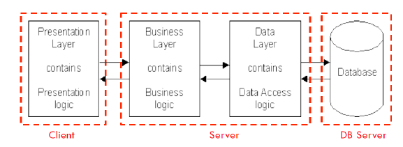
Ogni layer può runnare su una macchina differente!
I layer del client sono disconnessi da quelli del server.
Non posso mai fidarmi del client.
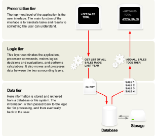
Il presentation layer
è alterabile in qualsiasi momento dal client
da la User Interface
GUI o Client View nel front end.
Non deve avere accesso ai dati del server in modo diretto.
Contenuto generato statico o generato dinamicamente dal browser (front-end)
Logic Layer
Set di regole per processare l'informazione
Può accontentare gli user
Chiamato middleware/backend
Non deve avere accesso ai dati del server in modo diretto.
Un livello per contenere processi e generazione di contenuti dinamici lato server server delle applicazioni, ad es. Java EE, ASP.NET, PHP, ColdFusion piattaforma (middleware)
Data Layer
Contiene i dati
Gestisce accesso al DB
Chiamato Back End
Non dovrebbe contenere business code
Un database, comprendente sia i set di dati che il database server o software RDBMS che gestisce e fornisce accesso ai dati (back-end)
Vantaggi
Layer indipendenti fra loro;
Più facili da mantenere;
Riutilizzabilità dei componenti;
- Sviluppo più veloce
- Web design fa presentazione
- Il software engineer fa la logica
- L'admin si occupa del DB
Pattern di Design
Progettazione e test
- Come costruiamo un'applicazione web?
- quale tecnologia dovremmo scegliere?
Riutilizzo
possiamo usare componenti standard?
Scalabilità
in che modo la nostra applicazione web gestirà un numero elevato di richieste?
Sicurezza
come proteggiamo da attacchi, virus, accesso a dati dannosi, rifiuto del servizio?
JS è una bomba di falle.
Visualizzazioni di dati differenti
tipi di utenti, account individuali, protezione dei dati
Serve un modo ovviamente per evitare di rifare tutto da capo ogni volta!
Una soluzione generale e riutilizzabile per un problema comune che si verifica nella progettazione del software.
Un modello (template) per come risolvere un problema. Modello che e’ stato utilizzato in molte situazioni diverse.
NON un disegno finito, il modello deve essere adatto all'applicazione.
Il Pattern MVC
Ho un probglema di progettazione dell'app
- Devo modificare il look and feel senza cambiare la logica nucleo di tutto;
- È necessario presentare i dati in diversi contesti (mobile friendly);
- Necessita di interagire con / Accedere a dati in diversi contesti(touch, tastiera..)
- Devo mantenere più viste degli stessi dati!
Progettualmente
Separo le funzionalità di base dalla presentazione e logica di controllo che usa questa funzionalità, permettendo a più viste di condividere lo stesso modello di dati, semplificando il supporto di più client.
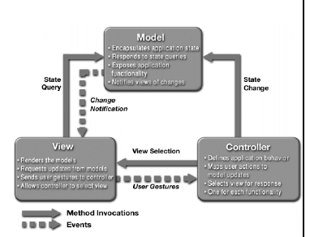
Ho separazione tra model e View.
Con questo schema è necessaria la logica per la manutenzione dei dati (database /file di testo) è separato da come i dati sono visualizzati (grafico, numerico) e come i dati possono essere interagiti con (GUI, riga di comando, touch).
Model
- gestisce il comportamento e i dati del dominio dell'applicazione
- risponde alle richieste di informazioni circa il suo stato (di solito dalla vista)
- esegue le istruzioni per cambiare stato (di solito dal controller)
View
- rende il modello in una forma adatta per l'interazione, in genere un'interfaccia utente (possono esistere più viste per un singolo modello per scopi diversi)
Controller
- riceve l'input dell'utente e avvia a risposta effettuando chiamate sul modello oggetti
- accetta input dall'utente e indica il modello e il viewport da eseguire azioni basate su quell'input
Avere dei thread in background ruba risorse di rete e della nostra macchina!
In pratica
Model
- Contiene conoscenze specifiche del dominio
- Registra lo stato dell'applicazione E.g., quali articoli sono in un carrello
- Spesso collegato a un database
- Indipendente dalla vista
- Un modello può essere collegato a diverse viste
View
- Presenta i dati all'utente
- Consente l'interazione dell'utente
- Non esegue alcuna elaborazione
Controller
- definisce come l'interfaccia utente reagisce all'input dell'utente (eventi)
- riceve messaggi dalla vista (da dove provengono gli eventi)
- invia messaggi al modello (indica quali dati visualizzare)
nelle App WEB
Model
- tabelle del database (dati persistenti)
- informazioni sulla sessione (dati attuali sullo stato del sistema)
- regole che regolano le transazioni
View
- (X) HTML
- fogli di stile CSS
- modelli lato server
Controller
- Script sul lato client
- elaborazione richiesta http
- logica aziendale / preelaborazione
Tipi di utilizzo JSP
Come utilizzo le JSP?
Ho tre modi:
Tre modi per l’utilizzo di JSP
Scriptlets
- Facile, rapido per i programmatori
- Nessuna riusabilità
- Difficile per i web designer: mescola l'HTML con il codice Java
JavaBeans / Entreprise Java Beans
- Facile per i programmatori, orientato agli oggetti
- Riutilizzabilità limitata
- Ancora difficile per i web designer: migliori distinzioni tra HTML e Java
Java Standard Tag library
JavaBeans
JavaBeans nella tecnologia JSP serve come contenitore di dati di scambio, orientate alla facilitazione della separazione del business layer dal presentation layer.
è una classe che segue delle regole particolari:
- Costruttore di default;
- Campi o privati o protetti;
- Non ho campi pubblici;
- Uso di setter e getter pubblici per accedere ai campi(proprietà);
- Se un bean deve supportare la persistenza, dovrebbe implementar l'interfaccia Serializable.
Esistono tre azioni standard:
xxxxxxxxxx31<jsp:useBean>2<jsp:setProperty>3<jsp:getProperty>Come utilizzarli
- Dichiarare un JavaBean in una JSP specificandone il nome usando il tag di azione JSP
<jsp: useBean>. - La sintassi di questo elemento JSP può variare in base al tipo di bean, ma in generale è necessario fornire l'ID del bean (nickname) e l'ubicazione. Successivamente è possibile impostare o ottenere le sue proprietà.
<jsp: useBean> permette di associare un'istanza di JavaBean associata ad un ID ad una variabile script dichiarata con lo stesso ID.
Attributi
Id: identità dell'istanza dell'oggetto nell'ambito specificato.Scope: ambito dell'oggetto, le opzioni sono:page: gli oggetti con questo ambito sono accessibili solo all'interno della pagina in cui sono stati creati, in pratica possono venire paragonati alle variabili locali di un qualsiasi linguaggio di programmazione, vengono distrutte alla chiusura della pagina e i dati saranno persi;request: gli oggetti con questo ambito sono accessibili esclusivamente nelle pagine che elaborano la stessa richiesta di quella in cui è stato creato l'oggetto, quest'ultimo inoltre rimane nell'ambito anche se la richiesta viene inoltrata ad un'altra risorsa;session: gli oggetti definiti in quest'ambito sono accessibili solo alle pagine che elaborano richieste all'interno della stessa sessione di quella in cui l'oggetto è stato creato per poi venire rilasciati alla chiusura della sessione a cui si riferiscono, in pratica restano visibili in tutte le pagine aperte nella stessa istanza (finestra) del Browser, fino alla sua chiusura. Solitamente i bean istanziati in questo modo vengono utilizzati per mantere le informazioni di un utente di un sito;application: gli oggetti definiti in quest'ambito sono accessibili alle pagine che elaborano richieste relative alla stessa applicazione, in pratica sono validi dalla prima richieta di una pagina al server fino al suo shutdown .
Esempio:
xxxxxxxxxx11<jsp:useBean id="nomeBean" scope="session" class=”myBean" />Crea un'istanza della classe myBean con ambito session richiamabile attraverso l'id NomeBean. Da questo momento sarà possibile accedere a metodi e variabili (pubbliche) attraverso la sintassi nomeBean.nomeMetodoOppureVariabile
xxxxxxxxxx151//CalculatorBean2package JavaBeans;3public class CalculatorBean {4private int number;5/**6* @return the number7*/8public int getNumber() { return number; }9/**10* @param number the number to set11*/12public void setNumber(int number) { this.number = number; }1314public int doubleIt() { return 2*getNumber(); }15}ed in JSP
xxxxxxxxxx121<jsp:useBean id="theBean“ class="com.brainysoftware.CalculatorBean"/>2<HTML>3<HEAD>4</HEAD>5<BODY>6<%7int i = 4;8theBean.setNumber(i);9int j = theBean.doubleIt(); out.print("2*4=" + j);10%>11</BODY>12</HTML>usando netbeans
- Definire una classe java per ogni bean
- I beans vanno in un package apposito, NON usare il DEFAULT PACKAGE
- Immettere le dichiarazioni per le sole variabili del bean
- Tasto destro>Refactor>encapsulate fields
- Selezionare i campi (tutti di solito) e dare enter.
getProperty e setProperty
getPropertySintassi:
<jsp:getProperty name=“nomeBean” property=“nomeProprieta” />- equivale a
<%= nomeBean.nomeProprieta %>.
- equivale a
Semantica:
- esegue il metodo get per accedere la proprietà, e poi esegue una
out.print - è necessario utilizzare il nome di una proprietà esistente se la proprietà è
nullviene restituita la stringa vuota.
- esegue il metodo get per accedere la proprietà, e poi esegue una
setPropertyCostante
Funzione
- Modifica il valore di una proprietà del bean.
- Ho varie forme per specificare il valore: Costante,espressione Java, Valore di uno o tutti parametri della richiesta
Sintassi :
<jsp:setProperty name="nomeBean" property ="nomeProprieta" value="valoreCostante"/>equivale a<% nomeBean.setProperty(nomeProprieta,1800) %>Semantica:
- Richiamo il metodo set corrispondente al nome indicato da property(+set) passando come parametro il valore di
value
- Richiamo il metodo set corrispondente al nome indicato da property(+set) passando come parametro il valore di
Espressione
Sintassi
<jsp:setProperty name="nomeBean" property ="nomeProprieta" value="<%=espressione%>"/>Semantica equivalente alla precedente.
Da fare attenzione, ho una conversione automatica del valore! Se è diverso da una stringa viene convertito!
Integer.parseInt()auto applicato.
Processamento Form
Sintassi 1
<jsp:setProperty name="nomeBean" property ="nomeProprieta" param="nomeParametro"/>- Semantica: Cerco il parametro nel contesto. Se lo trovo assegno il valore alla proprietà, altrimenti niente.
Sintassi 2
<jsp:setProperty name="nomeBean" property ="nomeProprieta"/>- Semantica: Più generico del precedente.
Sintassi 3
<jsp:setProperty name="nomeBean" property ="*"/>- Semantica: Assegno tutti i valori del form al bean.
Per tutti questi HO da tenere in conto la conversione automatica del valore.
Come Funziona il modello MVC con JSP


Nella JSP non devo avere codice java!
La servlet deve essere pulita, la parte importante deve essere il controllo.
06/05/2019
JSTL
Visto come sistema di templating
I browser Web non si preoccupano di come vengono prodotte le pagine Web. Per un browser web, non fa differenza se la pagina che sta visualizzando è statica (immutabile) o dinamica (prodotta da un linguaggio di programmazione o un sistema di template)
I sistemi di template come JSP e JSTL sono assimilabili alla funzione mail merge dei programmi di elaborazione testi
- In un Sistema di templating web, il testo del template e’ mescolato con dei placeholders.
- I placeholders sono convertiti/riempiti/autorizzati ogni volta che la pagina e’ richiamata da un richiesta web
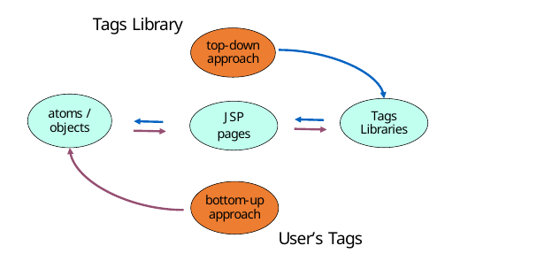
Custom TAGS
Prtendo quindi dal problema di Riuso, Manueenzione ed efficienza il Sistema si e’ evoluto verso un simil-template attraverso I CUSTOM TAGS (JSP)
Tali JSP CUSTOM TAGS permettono di scrivere un nuovo tag con una nuova funzione attribita e permettere di utilizzarlo all’interno della pagina JSP, sono stati quindi elaboati sia librerie standard che la metodologia per generare I propri.
TAG Library: una raccolta di tag.
La maggior parte dei tag tende ad essere impacchettata come parte di librerie contenenti molti tag che potrebbero funzionare indipendentemente o in coordinazione tra loro.
Essendo componenti riutilizzabili, le librerie di tag sono generalmente distribuite come file JAR.
Tag-library descriptor: file XML con estensione .tld.
- Questo file contiene la sintassi dei tag e le istruzioni richieste dal container per gestire tali tag.
Tag Handler: questa è la classe Java che contiene la logica per eseguire l'azione prevista per il tag.
- È un oggetto gestito dal container.
- La classe deve implementare una delle interfacce Java specificate se deve essere trattata come un gtag-handler valido dal container.
Tutti i sistemi di interscambio di dati si basano su descriptor di interscambio con parametri obbligatori e parametri facoltativi.
Lavorare con JSTL
Non sono così importanti come si pensava.I tag personalizzati che intendevano realizzare funzionalità di base comuni a progetti complessi sono stati rapidamente adottati. JSTL è proprio questo.
È una specifica per lo sviluppo di tag personalizzati che eseguono attività comuni come le date, la formattazione, l'analisi di XML e l'iterazione con le collections.
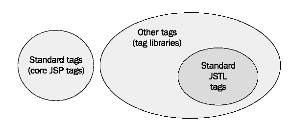
Esempio
xxxxxxxxxx61<% taglib prefix=”fmt” uri=”http://java.sun.com/jstl/fmt” %>2<html>3 <body>4 <fmt:formatNumber value=”00099765.4355” type=”currency” currencySymbol=”$” maxFractionDigits=”2”/>5 </body>6</html>Librerie standard JSTL
Per usare una libreria devo prima importarla!
Importo solo le librerie che uso.
Core Library: Tag più utilizzati. Iterano tra le collezioni, effettuano if-logic, scrivono output sulla pagina etc..
Include
- Accesso e modifica ai dati in memoria;
- Decisoni sulla pagina(
if); - Loop sui dati.
Prefisso :
cesempio
<c:forEach>Import:
<%@taglib prefix="c" uri="http://java.sun.com/jsp/jstl/core" %>
XML Library: Tag per parsare XML, effettuare trasformazioni XSL e fare azioni simili nel proprio XML.
Include
- Parsing( e lettura) di documenti XML;
- Stampare parte di documenti XML;
- Effettuare decisioni sulla pagina in base al contenuto di un documento XML.
Prefisso:
xesempio
<x:forEach>Import:
<%@taglib prefix="x" uri="http://java.sun.com/jsp/jstl/xml" %>
Formatting Library: Tag per lavorare con le date e trasformare i numeri.
Include
- Lettura e conversione numeri;
- Lettura e scrittura date (con timezone);
- Permettere all'app di funzionare in più lingue.
Prefisso:
fmtesempio
<fmt:formatDate>Import:
<%@taglib prefix="fmt" uri="http://java.sun.com/jsp/jstl/fmt" %>
SQL Library: Tag per la connessione al database, eseguire SQL queries e fare altre attività database-related.
Da non usare, viola MVC!
Prefisso:
sqlesempio
<sql:query>Import:
<%@taglib prefix="sql" uri="http://java.sun.com/jsp/jstl/sql" %>
JSTL usa un semplice linguaggio di espressione (Expression Language
el) per semplificare l'accesso alle informazioni.
xxxxxxxxxx141<% contentType="text/html" pageEncoding="UTF-8" %>2<% uri="http://java.sun.com/jsp/jstl/core" prefix="c" %>3<html>5 <head>6 <meta http-equiv="Content-Type" content="text/html; charset=UTF-8">7 <title>Lezione JSTL</title>8 </head>9 <body>10 <c:forEach var="i" begin="1" end="10" step="1">11 <c:out value="${i}" />12 </c:forEach>13 </body>14</html>- Prima di JSTL bisognava sapere molto java per creare delle webpages.
- Semplifica la creazione delle pagine.
- Molto piu semplice di java e di javascript.
JSTL: Linguaggio di Espressione
Le espressioni JSTL hanno funzione solo dentro i tag JSTL e non dentro gli attributi:
<p>Hi ${username}</p>.<a href="${link}">non ha una funzione particolare.Errata corrige: questo valeva solo nelle versioni vecchie.
Tag fondamentale c out
<c:out> è il tag fondamentale di output sulla pagina.
Diventa utile solo quando il valore dell'attributo contiene l'espressione in JSTL Expression Language.
Può utilizzare default come attributo:
xxxxxxxxxx31<c:out value="${username}" default="Nobody" />2<c:out value="${username}">Nobody</c:out>3<input type="text" name="username" value="<c:out value="${param.username}" />">Accedere ai dati con JSTL Expression Language
Possono essere di due tipi:
Scoped variables
Centrato su di esse
${username}vuol dire variabile scoped chiamata username.Quando appare in una espressione, è cercata nei seguenti contesti in sequenza:
Page Scope;
${pageScope.username}
Request Scope;
${requestScope.username}
Session Scope;
${sessionScope.username}
Application Scope.
${applicationScope.username}
Esempio
<c:out value="${sessionScope.user}" />Per accedere alle collezioni
${sessionScope.users}accedo al puntatore di tutta la collezione;${sessionScope.users[0]}primo elemento;${sessionScope.user.name}o${sessionScope.user["name"]}per accedere stile dizionario;${sessionScope.users[1].username}per accedere a valore di un valore.
Request parameters
Esempio
xxxxxxxxxx21<c:out value="${param.username}" />2<p>One language you can read is <c:out value="${param.language}" /></p>
Accedere ad altri dati
- Cookies:
${cokkie.nomeCookieDaAccedere} - Headers
${header["User-Agent"]} - Parametri di Inizializzazione:
${initParam.headerUrl}
Operatori logici
Posso avere degli operatori logici tipo ${2==2} ritorna true.
| Operatore | Descrizione | Esempio | Risultato |
|---|---|---|---|
==(eq) | Equals | ${5 eq 5} o ${5 == 5} | true |
!=(ne) | Not equals | ${5 ne 5} o ${5 != 5} | false |
<(lt) | Less than | ${5 lt 7} o ${5 < 7} | true |
>(gt) | Greather than | ${5 gt 7} o ${5 > 7} | false |
<=(le) | Less than or Equals to | ${5 le 5} o ${5 <= 5} | true |
>=(ge) | Greater than or Equals to | ${5 ge 6} o ${5 >= 6} | false |
Controllo esistenza variabile
${empty param.choice}
${empty sessionScope.userName}
Salvataggio dati
Ho diversi modi, però il più usato è <c:set>
Come attributi ho:
value: L'espressione da computare. Non è richiesto(default body);var: Il nome dell'espressione da settare(Obbligatorio);scope: Scope della variabile da settare. Non è richiesto(default Page).
xxxxxxxxxx51<c:set var="four" value="${3 + 1}" />2<c:set var="four" scope="session" value="${3 + 1}" />3<c:set var="eight">4 <c:out value="${4 * 2}" />5</c:set>Eliminazione dati
Uso <c:remove>
Come atrributi ho:
var: Il nome dell'espressione da eliminare(Obbligatorio);scope: Scope della variabile da eliminare. Non è richiesto(default qualunque).
xxxxxxxxxx11<c:remove var="four" scope="session" />Controllo di flusso JSTL
Uso di
ifCondizioni si-o-no con l'uso di
<c:if>Attributi
test: Condizione da valutare. Se falso ignora il body, se vero processa il body. Obbligatorio.var: Il nome dell'attributo da esporre il valoreboolean. Non obbligatorio.scope: Scope dell'attributo da esporre il valoreboolean. Non obbligatorio. Default page.
xxxxxxxxxx31<c:if test="${user.education == 'doctorate'}">2</c:if>3<c:out value="${user.name}" />Esempio
xxxxxxxxxx61<c:if test="${sessionScope.errors.serous.error1}" var="error1" scope="page">2A serious error has occurred.3</c:if>4<c:if test="${pageScope.error1}">5Since a serious error occurred, your data has not been saved.6</c:if>Condizioni in mutua esclusione con
<c:choose>,<c:when>,<c:otherwise><c:choose>- Non ha attributi e serve solo ad un container per i
<c:when>e<c:otherwise>.
- Non ha attributi e serve solo ad un container per i
xxxxxxxxxx61<c:choose>2<c:when test="${error1}">Error 1 has occurred</c:when>3<c:when test="${error2}">Error 2 has occurred</c:when>4<c:when test="${error3}">Error 3 has occurred</c:when>5<c:otherwise>Everything is fine</c:otherwise>6</c:choose>
Uso di loop o iterazioni
Looping General purpose con
<c:forEach>La funzione base di ciò è di considerare ogni item nella collezione q specificato con gli attributi dei loro oggetti.
Per ogni item nella collezione, il body del
<c:forEach>sarà processato una volta sola.Esempio:
xxxxxxxxxx31<c:forEach items="${user.medicalConditions}" var="aliment">2<c:cout value="${aliment}" />3</c:forEach>
Iterazione sulle strings con
<c:forTokens>Un token è una singola discreta unità in una stringa più larga.
Il tag
<c:forEach>itera sui token che parsano una stringa in input.Esempi:
xxxxxxxxxx31<c:forTokens items=«a;b;c;d" delims=";" var="current">2<c:cout value="${current}" />3</c:forTokens>Oppure
xxxxxxxxxx31<c:forTokens items="a,b,c,d,e,f" delims="," var="letter" begin="4">2<c:cout value="${letter}" />3</c:forTokens>Output:
efxxxxxxxxxx31<c:forTokens items="a,b,c,d,e,f" delims="," var="letter" end="4">2<c:cout value="${letter}" />3</c:forTokens>Output:
abcdeLooping numerico
xxxxxxxxxx31<c:forEach begin="1" end="5" var="current">2<c:out value="${current}" />3</c:forEach>Output:
1 2 3 4 5xxxxxxxxxx31<c:forEach begin="2" end="10" step="2" var="current">2<c:out value="${current}" />3</c:forEach>Output:
2 4 6 8 10
13/05/2019
Problema della lingua
Il problema del reperimento di una scelta di lingua/posizione geografica (da cui una lingua) e’, nel tempo, diminuto grazie all’aiuto di strumenti di business intelligence:
Posizione attraverso GPS da un telefono (serve HTML5)
- Quasi mai usato, chiede consenso e HTML5.
Posizione attraverso DNS
- In base all'IP, fanno richiesta al DNS e ottengono dove si trova.
- 8.8.8.8 è un servizio multicast(ho più server dietro).
- Aggirabile con un proxy.
Preferenze dell’utente nel browser
- In base alle impostazioni del browser, inserite nell'header, mi risponde nella mia lingua.
Scelta esplicita
- Utilizzo da un pratico menù sul sito.
- Approccio più problematico per l'impostazione.
L’applicazione deve contenere tutta una serie di attenzioni per poter essere resa multilingue:
- Il testo, che sara’ poi trasfermato dalle lingue scelte, deve essere tutto nelle JSP (e non sparpagliato anche nel Javascript o nel CSS)
- La traduzione potrebbe portare ad adottare delle variazioni nel CSS (perche’ ad esempio una parola e’ piu’ lunga). Matenere le variazioni in un CSS separato in modo da poterlo eventualmente caricare solo se servisse. (override delCSS di default)
Ricordarsi che certe lingue adottano la scrittura da sinistra a destra (Arabo, Israeliano,..) bisognera’ prestare attenzione ad eventuali figure o senso delle stesse.(RTL)
Inizio ad avere problemi quando uso immagini con scritte!
Bisogna fare attenzione alle parole composte!
Encoding
Non uso <%@ page contentType="text/html; charset=UTF-8" %>,
ma uso <%@page pageEncoding="UTF-8" %>
Perchè?
Altrimenti alcune informazioni non passano in maniera corretta.
Usando anche HTML: <META http-equiv="Content-Type" content="text/html;charset=UTF-8">
Formattazione data e valuta
Come facciamo a fare in modo che rispetti GMT e valuta del paese in base al paese stesso?
Uso il formatter di java.
<fmt:formatNumber value="1.21" type="currency"/>
Problema dei contenuti da database
Ho più sorgenti per i contenuti multilingua
Testo della pagina
Contenuto della pagina derivante dal DB
Ricordarsi che il database ha implicitamente un Character-Encoding che dipende da: Inizializzazione database, default server database,client- database
Il modo più semplice per fare una tabella multilingua:
xxxxxxxxxx21CREATE TABLE T_PRODUCT (pr_id int, PRICE NUMBER(18, 2))2CREATE TABLE T_PRODUCT_tr (pr_id INT FK, languagecode varchar, pr_name text, pr_descr text)- In questo modo mi basta un join per ottenere i miei dati.
- L'aspetto negativo è che ho un linguaggio con meccanismo di fallback complesso, devo implementarlo.
Devo gestire i cambi dell'ora! Se torna indietro di un ora e ho una transazione o monitoraggio, subisco un cambiamento dei log nel DB.
Resource Boundle
In Java, il resource bundle e’ un oggetto di tipo java.util.ResourceBundle class.
Questa classe contiene oggetti locale-specifici. Quando ho bisogno di qualcosa, lo prendo in base al linguaggio locale del cliente.
In questo modo possiamo:
- Facilmente utilizzare la localizzazione od effettualre una traduzione;
- Utilizzare molteplici linguaggi;
- Aggiungere, anche in seguito facilmente altre traduzioni.
viene utiliizzato ResourceBundle definito in PropertyResourceBundle:
PropertyResourceBundle gestisce le risorse come file di testo che utilizzano estensione .properties e contengono informazioni locali specifiche sotto forma di coppie chiave-valore.
Con ogni nuova traduzione, viene creata una nuova versione del pacchetto di risorse aggiungendo l'identificatore locale al nome base usando un trattino basso ('_').
Esempio
messages_en.properties
xxxxxxxxxx21meats=meats2bakery=bakerymessages_cs.properties
xxxxxxxxxx21meats=maso2bakery=pečivoNell'esempio sopra (due file), "messages" rappresenta il nome base e l'identificativo locale è la doppia lettera
codice che viene aggiunto utilizzando un trattino basso. (cioè, "en" per l'inglese, "cs" per il ceco). I codici a due lettere sono derivati dallo standard internazionale ISO 639, che elenca i codici che rappresentano i nomi delle lingue. ISO 639 lo standard è adottato dall'attività di internazionalizzazione del W3C ed è utilizzato da tutti i principali browser (questi sono i codici inteso nell'intestazione HTTP Accept-Language). È anche internalizzato nella classe java.util.Locale.
Come fare dunque?
Seguo delle regole.
Il sito Web inizialmente viene visualizzato in base alla lingua preferita del browser dell'utente.
Se la lingua preferita del browser non è né una delle lingue disponibili (ad esempio: inglese o ceco), il sito visualizza il testo in inglese.
L'utente ha la possibilità di cambiare la lingua per mezzo di una icona o menu di lingua nell'intestazione della pagina.
Quando si utilizza la bandierina della lingua per cambiare la lingua, l'utente rimane nella stessa vista della pagina.
- Evita di riscrivere tutto nei form!
La lingua non dovrebbe apparire per la pagina di conferma, in quanto un utente avrà già selezionato la sua lingua prima del checkout.
Per implementare i punti precedenti, si inizia solitamente creando un supporto bilingue di base per le visualizzazioni di pagina.
Una volta attivato il supporto bilingue, implementare il selettore di lingua che consente agli utenti di cambiare manualmente lingua.
Esempio implementativo
Rimando alle slide n23 con netbeans.
Infine dobbiamo registrare il resource bundle nell'app.
La registrazione viene fatta nel file web.xml
Parameter Name:javax.servlet.jsp.jstl.fmt.localizationContext
Parameter Value:resources.messages
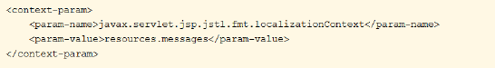
Utilizzo di un Bundle da una pagina JavaServer con un tag JSTL.
JSTL ti consente di utilizzare facilmente i pacchetti di risorse in un JSP.
La prima cosa che devi fare è dichiarare che stai per utilizzare la libreria di tag fmt di JSTL:
<%@taglib prefix="fmt" uri="http://java.sun.com/jsp/jstl/fmt" %>
La prossima cosa è dire alla libreria quale Bundle utilizzerai.
Supponi di utilizzare com.domain.YourBundle:
<fmt:setBundle basename="com.domain.YourBundle" />
L'ultima sta usando i valori recuperati dove ne hai bisogno:
<fmt:message key="your.key"/>
Affinare l'implementazione
Fino ad ora si e’ visto come creare un modo automatico di utlizzare lingue differenti.
Per creare Un menu con Bandierine Il parametro di scelta della lingua potra’ essere gestito via cookie, come parametro di sessione o come parametro della request: è una questione di scelta implementativa.
(Analogamente a quanto visto ad esercitazione potrebbe essere conveniente utilizzare un filtro per settare tale parametro/cookie).
Menu Flag
Li vedremo ad esercitazione.
14/05/2019 - Laboratorio
seguo slide
20/05/2019
Javascript
Nato con netscape, copiato dalla microsoft, non ha nulla a che fare con java. Abbiamo Javascript 6.
Pecularità
Mix di c++ e java, complicato con funzionalità non banali con librerie .
Non è multithreading.
Non ha funzionalità I/O di base.
È interpretato.
Linguaggio di scripting con programmazione procedurale e funzionale.
Gli array sono una classe particolare di oggetti.
Numeri
Tutti i numeri sono convertiti in float. Attenzione a
0.1+0.2=0.3000000000004
Sono tutti in double precision 64 bit. Gli integer sono trattati con 32 bit.
Ho un oggetto implicito chiamato
Mathche ha le funzioni math di base.ParseInt
parseInt('123',10);darà 123parseInt('023',10);darà 23parseInt('11',2);darà 3
Posso usare il
parseFloatdove però sarà sempre in base 10.Not a Number
parseInt('hello',10);darà NaNNaN+5;darà NaNisNaN(NaN);saràtrue
infinito
1/0;daràinfinity-1/0;da-infinityisFinite(1/0);daràfalseisFinite(infinity);daràfalseisFinite(NaN);daràfalse
Stringhe
'hello'.length'hello'.charAt(0)darà h
Concateno con 'hello'+'ciao'.
Attenzione alle inconsistenze con i numeri!
Null e undefined
Null è quando non trovo un valore.
Undefined è quando è stato dichiarato ma non inizializzato.
false,0,"",NaN,null,undefined saranno tutti false.
Booleani
i booleani sono supportati.
Le operazioni binarie pure.
&&,||,! ...
variabili
- let è valido per il blocco dove è stato definito;
- var lo rende valido per la funzione o per il blocco funzionale.
xxxxxxxxxx81for(var i=0;i<10;i++){2 3}4console.log(i);5for(let j=0;j<10;j++){6 7}8console.log(j);avrà in output
xxxxxxxxxx21102ReferenceError: j is not defined- const crea una costante.
Operatori
Come operatori ho +,-,*,/,%,==,=,+=,-=,++,--,!=.
Attenzione:
++incrementa di uno
+ +dipende dal contesto:
1+ +2è uguale a1+0+2ciòe3'3'+4+5=345perchè ho una stringa all'inizio quindi passo tutto in stringa.3+4+'5'=75perchè ho una stringa alla fine quindi prima fa3+4=7e poi concatena.
7>3>2daràfalseperchè7>3datruecioè1. Ora fa1>2ed èfalse.
'hello'+' world'è uguale a'hello world'.
Strutture di controllo
Le strutture di controllo if ed else, do e while funzionano come negli altri linguaggi.
Lo switch è uguale.
Il for può accedere in simil foreach
xxxxxxxxxx31for(let value of array){2 //lavoro con value3}Circuiti logici in corto circuito
var name=o && o.getName()
chiama getName solo se o è definito. (normale circuito logico).
Oggetti
- Gestiti come un database NoSQL, salvati in simil
json. - Hanno un lookup molto rapido.
- Possono contenere qualsiasi cosa.
var obj=new Object() oppure var obj={}.
xxxxxxxxxx71{2 a:'eeee',3 eta: 34,4 details: {5 //altro oggetto6 }7}ci posso accedere con obj.a e per gli oggetti dentro gli oggetti obj.details.attributo
posso accederci come dizionario obj['a']=qualcosa
Funzioni
Una funzione è sia una funzione che rappresenta una classe per come viene usata -Gino Perna 2019
xxxxxxxxxx41function Person(name,age){2 this.name=name;3 this.age=age;4}Notare che non è tipizzata.
xxxxxxxxxx51function arg(args){2 for(let num in args){3 //fai cose4 }5}permette un numero non definito arbitrariamente di argomenti.
Posso chiamare una funzione con un numero abritrario di argomenti:
arg.apply(null,[2,3,4,5]);
Array
xxxxxxxxxx21var a = new Array();2a[100] = 'fox' posso definire con salti come in questo esempio. Se provo a recuperare tra lo 0 e 99 ho undefined.
Posso vederne la lunghezza con a.length(in questo caso 101)
Posso definirlo anche come
var a=[] ed inizializzarlo come var a=['fox','jumped','over']
Posso effettuare un forEach al volo:
xxxxxxxxxx31a.forEach(function (currentValue, index)){2 //cose3 });Posso trattarla come stack a.push(), a.pop().
Custom Objects
xxxxxxxxxx91{2 a:'eeee',3 eta: 34,4 details: {5 //altro oggetto6 }7 voti: function(){/*...*/}8 cose: function(){return this.a+' '+this.eta}9}Oggetti con funzioni dentro.
Errori comuni
xxxxxxxxxx21var func=a.voti;2func();//undefinedEsempi particolari
xxxxxxxxxx61console.log(1+'2'+'2'); //1222console.log(1+ +'2'+'2'); //323console.log(1+ -'1'+'2'); //024console.log(+1+'1'+'2'); //1125console.log('A'-'B'+'2'); //NaN26console.log('A'-'B'+2); //NaNxxxxxxxxxx81[]+[];//stringa vuota (perchè tostring)2[]+{};//object vuoto (perchè vede le graffe come obj)3{}+[];//0 (perchè tratta il primo come blocco funzionale)4{}+{};//NaN (firefox) (perchè vedo due blocchi funzionali) 5//oppure "[object Object][object Object]" (chrome)6Array(16);//mette apice per riempire cose vuote7Array(16).join('wat');//"watwatwatwatwatwatwatwatwatwatwatwatwatwatwat"8Array(16).join('wat'-1);//"NaNNaNNaNNaNNaNNaNNaNNaNNaNNaNNaNNaNNaNNaNNaN" (batman!)21/05/2019 - Lab
Seguo Slide.
27/05/2019
QR Codici
Codici quick response code
è un bar code due dimensionale.
Abbiamo diversi standard. Derivanti da codici a barre!
UPC 8: Memorizza al massimo otto numeri, la salva usando la distanza tra le barre e la grandezza delle barre.
Al giorno d'oggi abbiamo dei lettori a barre in laser(anche se esiste un lettore ccd, ma non riescono a leggere i codici densi).
Posso utilizzarlo per mettere praticamente qualsiasi cosa in formato di testo!
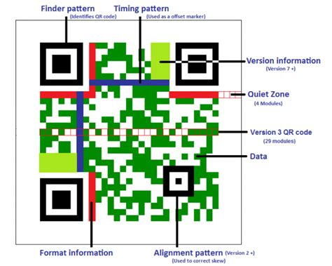
Massimo
- 4296 numeri
- 7089 digits
- 2953 Bytes
- 1817 Kanji char
Abbiamo correzione di errore
- Uso di algoritmi di compressione
- Algoritmi di correzione dell'errore
Posso settare diverse "qualità" dei dati.
Percentuale di correzione degli errori:
- L:7%
- M:15%
- Q:25%
- H:30%
La qualità va da L a H.
Libreria principale Zebra crossing, ma non è immediata utilizzarla, mentre QRGen si interfaccia con Zebra Crossing e rende l'implemenntazione più semplice.
Utilizzo
xxxxxxxxxx221import java.io.ByteArrayOutputStream;2import java.io.File;3import java.io.FileNotFoundException;4import java.io.FileOutputStream;5import java.io.IOException;6importimportnet.glxn.qrgen.QRCode;7net.glxn.qrgen.image.ImageType;8public class Main {9public static void main(String[] args) {10ByteArrayOutputStream out = QRCode.from("Hello World") .to(ImageType.JPG).stream();11try {12FileOutputStream fout = new FileOutputStream(new File( "C:\\QR_Code.JPG"));13fout.write(out.toByteArray());14fout.flush();15fout.close();16} catch (FileNotFoundException e) {17// Do Logging18} catch (IOException e) {19 // Do Logging20}21}22}xxxxxxxxxx141Alcuni override al default2// get QR file from text using defaults3File file = QRCode.from("Hello World").file();4// get QR stream from text using defaults5ByteArrayOutputStream stream = QRCode.from("Hello World").stream();6// override the image type to be JPG7QRCode.from("Hello World").to(ImageType.JPG).file();8QRCode.from("Hello World").to(ImageType.JPG).stream();9// override image size to be 250x25010QRCode.from("Hello World").withSize(250, 250).file();11QRCode.from("Hello World").withSize(250, 250).stream();12// override size and image type13QRCode.from("Hello World").to(ImageType.GIF).withSize(250, 250).file();14QRCode.from("Hello World").to(ImageType.GIF).withSize(250, 250).stream();Attenzione al nome!
Devo mettere un nome randomico o un nome che ha un unico riferimento.
xxxxxxxxxx71//Creazione di un file temporaneo2//Apache commons lang3String ext = "dat";4File dir = new File("/home/pregzt");5String name = String.format("%s.%s",6RandomStringUtils.randomAlphanumeric(8), ext);7File file = new File(dir, name);
Nelle servlet
xxxxxxxxxx61File: index.jsp2<form action="qrservlet" method="get">3<p>Enter Text to create QR Code</p>4<input name="qrtext" type="text">5<input value="Generate QR Code" type="submit">6</form>
Nel file .java
xxxxxxxxxx281import java.io.ByteArrayOutputStream;2import java.io.File;3import java.io.FileNotFoundException;4import java.io.FileOutputStream;5import java.io.IOException;6import java.io.OutputStream;7import javax.servlet.ServletException;8import javax.servlet.http.HttpServlet;9import javax.servlet.http.HttpServletRequest;10import javax.servlet.http.HttpServletResponse;11import importimportnet.glxn.qrgen.QRCode;12import net.glxn.qrgen.image.ImageType;1314public class QRCodeServlet extends HttpServlet {15protected void doGet(HttpServletRequest request,17HttpServletResponse response) throws ServletException, IOException {18String qrtext = request.getParameter("qrtext");19ByteArrayOutputStream out = QRCode.from(qrtext).to(20ImageType.PNG).stream();21response.setContentType("image/png");22response.setContentLength(out.size());23OutputStream outStream = response.getOutputStream();24outStream.write(out.toByteArray());25outStream.flush();26outStream.close();27}28}
Ads
Grazie al recupero degli errori, posso mettere un'immagine e/o scritte deltro al QR, nella parte centrale.
XLS
Perchè non usare excel:
- Tutte le librerie fornite da MS passano attraverso OLE
- Obbligano l'acquisto delle licenze di Office
- Problemi di compatibilita'
- Problemi di internazionalizzazione (formato numeri)
- Utilizzo di piattaforma MS Windows
- Utilizzo di RAM
API excel di oggi compatibili (2007 excel)
JexcelAPI
Progetto Jakarta POI: HSSF (Horrible SpreadSheet Format)
framework COCOON: cocoon serializer
OpenXLS Java Spreadsheet Platform is created by Extentech Inc (suppporta excel 2013)
Uso degli excel come DB
- JDBC-ODBC Excel driver
- JCOM
- xlSQL
Generazione Reports
JXLS
Jasper Reports
Excel: copiatura
xxxxxxxxxx121for (int i = 0 ; i < numrows ; i++)2{3 for (int j = 0 ; j < numcols ; j++)4 {5 readCell = sheet.getCell(i, j);6 newCell = readCell.copyTo(i, j);7 readFormat = readCell.getCellFormat();8 newFormat = new WritableCellFormat(readFormat);9 newCell.setCellFormat(newFormat);10 newSheet.add(newCell);11 }12}
Uso librerie POI o OpenXLS
OpenXLS
xxxxxxxxxx421 package testopenxls;2 import com.extentech.ExtenXLS.WorkBookHandle;3 import com.extentech.ExtenXLS.WorkSheetHandle;4 import java.io.FileNotFoundException;5 import java.io.FileOutputStream;6 import java.io.IOException;7protected void run() {8// creo un WorkBookHandle vuoto9WorkBookHandle workbook = new WorkBookHandle();10// con il workbook ci posso fare poco: devo creare un nuovo WorkSheet, tramite il metodo createWorkSheet11WorkSheetHandle sheet1 = workbook.createWorkSheet("Dati");12try {13// nel foglio di lavoro, posso scrivere valori tramite i metodi add(...)14// inserisco del testo nella cella A1 ovvero (0,0)15sheet1.add("inserisco del testo", 0, 0);16// inserisco un valore numerico17sheet1.add(5.8e-4, 0, 1);18// alla fine, posso scrivere il contenuto del workbook in un file, con il metodo writeBytes19// a cui devo passare un OutputStream.20// creo un FileOutputStream passandogli il path del file passato come argomento21FileOutputStream outputStream = new22FileOutputStream(file);23try {24workbook.writeBytes(outputStream);25} finally {26// chiudiamo il FileOutputStream27outputStream.close();28}29// chiudere sempre anche il workbook!30workbook.close();31} catch (FileNotFoundException ex) {32// l'eccezione viene lanciata quando il file non può essere creato33System.err.println("Illegal output file: " + file);34ex.printStackTrace();35System.exit(1);36} catch (IOException ex) {37// eccezione lanciata quando lo stream non può essere chiuso38ex.printStackTrace();39System.exit(1);40}41}42
POI
l'utilizzo e' leggermente piu' oneroso, soprattutto per i controlli ed alcuni formati che non sono piu' di default ma devono essere esplicitati ogni volta .
La libreria POI crea xls,xlsx compatibili con qualsiasi versione
xxxxxxxxxx441public static void main(String[] args) {2PoiExample example = new PoiExample();3//Metodo che mi restituisce la collezione di dati da4inserire nel foglio excel. L'esempio scrive una singola colonna.5Collection<Object> records =6example.createCollectionOfData();7}8File file = new File("esempio.xls");9HSSFWorkbook wb = new HSSFWorkbook();10try {11example.printWorkbook(records, wb, file);12} catch (Exception ex) {13ex.printStackTrace();14}1516protected void printWorkbook(Collection<Object> records, Workbook workbook, File17outputFile) throws Exception {18Sheet sheet = null;19try {20sheet = workbook.getSheetAt(0); //Recupero il foglio in cui scrivere (il21primo del workbook).22} catch (Exception iae) {23//Se il file Excel è nuovo, non esiste nessu foglio. Devo crearne uno.24sheet = workbook.createSheet();25}26try {27int row = 0;28for (Object record : records) {29printCell(30record, //L'oggetto da inserire nella cella31Color.YELLOW, //Imposta il colore di sfondo della cella32row, //La riga in cui inserire l'oggetto330, //La colonna in cui inserire l'oggetto34sheet //Il foglio in cui inserire l'oggetto35);36}37row++;38}39} finally {40final FileOutputStream fos;41fos = new FileOutputStream(outputFile);42workbook.write(fos);43fos.close();44} continuo dell'esempio nelle slide, con i metodi più importanti printCell
Attenzione:
Il file creato e' formattato secondo il locale settato (caso tipico separatore decimale!)
Sbagliare il formato di scrittura (tipo di dato) vuol dire sbagliare la formattazione (allineamenti), ma poi aver problemi di lettura
Lettura sotto linux con openoffice oppure gnumeric
Usare i percorsi relativi, non assoluti.
nomeclasse.class.getClassLoader().getResource(“log4j/log4j.properties”);- Cosi' facendo cerco il file log4j.properties nel package log4j della mia applicazione, a prescindere dall'architettura e da dove sposti l'applicazione (con i packages ovviamente)
Normalmente, nelle applicazioni web, capitera' di specificare files che devono essere ricercati in modalita' relativa rispetto alla applicazione stessa.
tabelle pivot dai file generalmente le integriamo con servizi di Analytics.
03/06/2019
Operatore + in JS
Accetta qualsiasi oggetto, numero e stringa.
operand+operand=resultUna variabile JS può essere NULL solo se la assegno come null.
Se almeno un operando è un oggetto , viene convertito in un valore primitivo (stringa, numero o booleano);
- Se il tipo di oggetto è Date , viene utilizzato il metodo toString() ;
- In altri casi viene utilizzato il metodo valueOf() , se restituisce un valore primitivo ;
- In altri casi (se valueOf() non esiste o non restituisce un valore primitivo ), viene utilizzato il metodo toString() . Questo succede la maggior parte delle volte.
Quando una matrice viene convertita in una primitiva, JavaScript usa il suo metodo
join(','). Ad esempio, la primitiva di[1, 7, 6]è "1,7,6" . Il valore primitivo di un oggetto JavaScript semplice{}è "[object Object]" .Dopo la conversione, se almeno un operando è di tipo stringa , il secondo operando viene convertito in stringa e viene eseguita la concatenazione ;
xxxxxxxxxx11var result = 1 + "5"; // "15"1 + "1"(Il secondo operando è una stringa e in base alla regola 2 il numero 1 diventa "1" );"1" + "1"(concatenazione di stringhe);"15".
In altri casi entrambi gli operandi vengono convertiti in numeri e viene eseguita l'aggiunta aritmetica .
Numero e vettore
xxxxxxxxxx11var result = [1, 3, 5] + 1; //"1,3,51"[1, 3, 5] + 1(Usando la regola 1 , trasforma l'array[1, 3, 5]in un valore primitivo:"1,3,5");"1,3,5" + 1(Usando la regola 2 , trasforma il numero 1 in una stringa "1" );"1,3,5" + "1"(concatenazione di stringhe);"1,3,51".Il primo operando è un array, quindi viene trasformato in un valore stringprimitivo. Al passo successivo l'operando numero viene trasformato in stringa.
Quindi viene eseguita la concatenazione tra 2 stringhe.
Numero e Boolean
xxxxxxxxxx11var result = 10 + true; //1110 + true(basato sulla regola 3 converte il valore booleano true in un numero 1 )10 + 1(somma due numeri)11
Numero ed Oggetto
xxxxxxxxxx11var result = 15 + {}; // "15[object Object]""15 + {}"(Il secondo operando è un oggetto. Applicare la regola 1 e l'oggetto alla primitiva è una stringa"[object Object]")15 + "[object Object]"(Usando la regola 2 trasforma il numero 15 in una stringa "15" )"15" + "[object Object]"(concatenazione di stringhe)"15[object Object]"
Numero e null
xxxxxxxxxx11var result = 8 + null; // 88 + null(Poiché nessuno degli operandi è una stringa, converti il numero null in un numero 0 base alla regola 3 )8 + 0(aggiunta di numeri)8
Stringa e null
xxxxxxxxxx11var result = "queen" + null; // "queennull""queen" + null(Poiché il primo operando è una stringa, converti il null in una stringa "null" base alla regola 2 )"queen" + "null"(concatenazione di stringhe)"queennull"
Numero e undefined
xxxxxxxxxx11var result = 12 + undefined; // NaN12 + undefined(Poiché nessuno degli operandi è una stringa, converti l' undefined in un numero NaN basato sulla regola 3 )12 + NaN(aggiunta di numeri)NaN
Una uguaglianza con
NaN(==e===) da semprefalse.
AJAX
AJAX = Asincronous JavaScript And XML.
AJAX non è un linguaggio di programmazione. È
- Un oggetto XMLHttpRequest incorporato nel browser (per richiedere dati da un server Web);
- DOM JavaScript e HTML (per visualizzare o utilizzare i dati).
AJAX è un nome fuorviante.
Le applicazioni AJAX potrebbero utilizzare XML per trasportare dati, ma è altrettanto comune trasportare i dati come testo normale o testo JSON.
avere response dinamiche con il database crea rischio di timeout, meglio inviare via mail i dati(effettua la richiesta, quando pronta gli arriva via mail).
Come funziona
- Un evento si verifica in una pagina Web (la pagina viene caricata, si fa clic su un pulsante);
- Un oggetto
XMLHttpRequestviene creato da JavaScript; - L'oggetto
XMLHttpRequestinvia una richiesta a un server web; - Il server elabora la richiesta;
- Il server invia una risposta alla pagina web;
- La risposta viene letta da JavaScript;
- L'azione corretta (come l'aggiornamento della pagina) viene eseguita da JavaScript.
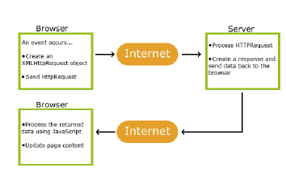
In sostanza
- Aggiorna una pagina Web senza ricaricare la pagina;
- Richiedi dati da un server - dopo che la pagina è stata caricata;
- Ricevi dati da un server - dopo che la pagina è stata caricata;
- Invia dati a un server - in background;
- E’ utilizzato ovunque ci sia una azione in background o scatenata da un evento.
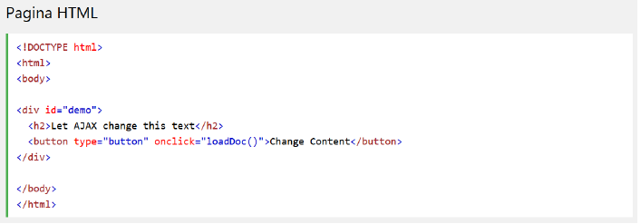
La pagina HTML contiene una sezione <div> e un <button>.
La sezione <div> viene utilizzata per visualizzare le informazioni da un server.
Il<button> chiama una funzione (se viene cliccato).
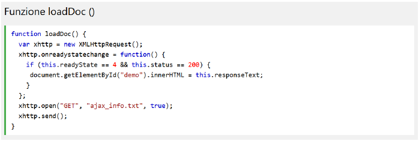
Un oggetto XMLHttpRequest viene creato da JavaScript, L'oggetto XMLHttpRequest invia una richiesta a un server web
- Il server elabora la richiesta, Il server invia una risposta alla pagina web
- La risposta viene letta da JavaScript
- L'azione corretta (come l'aggiornamento della pagina) viene eseguita da JavaScript.
04/06/2019 - Lab
seguo le slide.
Sistema di triangolarizzazione
Un telefono usa due algoritmi per triangolare la posizione:
GPS+Glonass+Satelliti cinesi
GPS è americano, circa 22 satelliti globali
Due frequenze, una superprecisa(1metro), una civile. Quella militare(superprecisa) è stata messa a disposizione dei cittadini comuni.
Glonass sono satelliti globali russi.
Questi satelliti vanno cambiati ogni 7-10 anni.
Questo può metterci fino ai 15 minuti per darci la posizione!
La precisione è livello militare.
Triangolazione in base alle celle viste
In base alle celle, vede quanto distante è da esse e triangola la posizione, fino a quando non abbiamo i dati precisi dal gps.
Un sito web triangola la nostra posizione attraverso IP, oppure chiede accesso alla posizione ed utilizza questi algoritmi se presente una sim e un GPS.